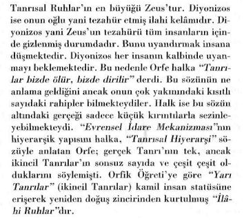
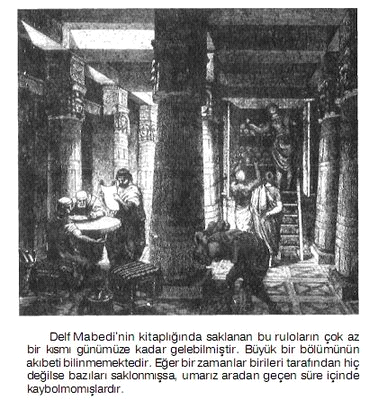
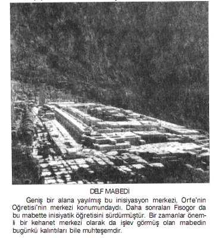
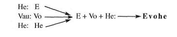

Mısır'da yüzyıllarca sürdürülen inisiyatik eğitimin dünya üzerinde birçok etkileri ve bu etkilerin çeşitli yansımaları olmuştur. Çünkü dünya üzerindeki birçok ülkeden kalkıp Mısır'a gelip inisiye edilen kişiler, daha sonra geldikleri ülkelere dönmüşler ve eğitildikleri merkeze ait bilgileri üstü örtülü bir şekilde kendi ülkelerinde dile getimıişlerdir. Böylelikle inisiyatik sırlar bilgisine ait gelenek, farklı yerlerde, farklı görünümler altında yeşerme imkânı bulmuştur. Bunların başında Antik Yunan Kültürü gelir.
"Sayılar evrene hükmeder..."
"KutsalMatematik'' ve "Sayılar Bilimi", Fisâgor tarafından işte tek bir cümleyle böyle ifade edilmişti... Evet... Antik Yunan Kültürü dendiğinde ilk akıllara gelen isim Fisagor'dur. Fisagor gerçekten de. Yunan Kültürü'nde çok önemli bir basamak taşı oluşturmuştur. Ancak Fisagor'a gelmeden önce Yunanistan'da yaşananları kısaca hatırlayalım... Böylelikle Mısır Kültürü ile Yunan Kültürü'nün bağlantılarını çok daha iyi gözler önüne serme imkânını elde edebileceğimizi düşünüyorum...
Dişil Ay İnisiyasyonu'nun dejenere edilmiş hali olan "Baküs" ile Eril Güneş İnisiyasyonu'nun dejenere edilmiş hali olan "Apollon" dinleri Yunanistan'da bir arada yaşatılmaklaydı. Bunlar bir arada yaşamaktan ziyade, birbirleriyle sürekli çekişen ve birbirlerine üstünlük sağlamaya çalışan iki ayrı rahipler grubunun başını çektiği bir kaos ortamı içinde bulunmaktaydılar demek, aslında daha doğru olur. İşte bu dönemde (M.Ö. 800 - 700) Apollon Rahipleri'nin en büyük merkezi Delf Mabedi'ydi. M.Ö. 700'lerde bu iki grup arasındaki sürtüşme ciddi kıyımlara kadar ulaşmıştı. Azınlıktaki Apollon taraftarları, çoğunluğu ellerinde bulunduran Baküs taraftarlarınca yokedilrae tehdidi altında bulunmaktaydılar. İşte bu ortamda Örfe, Delf Mabedi'nin bakire rahibelerinden birinin oğlu olarak dünyaya geldi. Bu mabbette görevli rahibelerin bakire olması zarureti vardı. Bu nedenle söz konusu rahibenin, Tanrı Apollon tarafından hamile kaldığı iddiası halk arasında dolaşmaya başlamıştı. Benzer fenomenler bilindiği gibi başka dinlerde ve başka toplumlarda da ortaya çıkmıştır. Göksel Güçlerce hamile kalan bir bakire rahibeden doğduğu ileri sürülen Orfe'nin yaşamı tehlike altındaydı. Baküs taraftarlarının elinden kurtulmak için Örfe Yunanistan'dan kaçarak Mısır'a geldi ve Osiris Rahipleri'ne sığındı. Burada inisiye edilen ve Osiris Rahipleri arasında 20 yıl geçirerek "Sırlar Öğretisi"ni alan Orfe, Apolion Ögretisi'ni yeni baştan revize edip düzeltmek ve ona yeni bir çehre vermek göreviyle Osiris Rahipleri'nce ülkesine geri gönderildi. Mısır'a geldiği döneme kadar Yunanistan'da Apollon'un Oğlu olarak isimlendiriliyordu. Orfe ismi Mısır'daki eğitimini tamamlayıp Yunanistan'a döndüğünde kendisine verildi. Anlamı "Şifalı lşık". Bir zamanlar Osiris'in Atlantis'te yaptığı gibi, güçlü kişiliği ve bilgeliği sayesinde kısa sürede çevresine birçok yandaş topladı. Baküs Rahipleri'nin karşısına dikilecek kadar güçlenen Orfe taraftarları, halk üzerinde pozitif yönde büyük bir etki alanı yaratmayı başardılar. Orfe kendi ekolünü kurarken eski Yunan inançlarını reddetmedi. Eski inançlardaki Zeus, Diyonizos gibi ilâhlara ezoterik anlamlar yükleyerek Apolion Kültü'nün içinde bunları eritme ve bütünleştirme yöntemine başvurdu. Bir zamanlar Delf Mabedi'nde yaşatılan Apolion Kültü, Örfe tarafından revize edilip dejenere olmuş yönlerinden arındırıldıktan sonra Diyonizos Kültü olarak da anılan bir ekol yine aynı mabette yaşatılmaya devam ettirildi. Böylelikle ortaya "Zeus" ve "Diyonizos Kültleri" ortaya çıktı. Aslında Orfe'nin yaptığı yozlaşan eski inançlara ait sembollerin asıl anlamlarını kendi öğretisi içinde Yunan'a yeniden hatırlatmaktı. Örfe kendi öğretisini halka açıklarken Mısırlı rahiplerin yöntemini kullandı ve sırları perdeleyerek aktardı. Böylece Yunan Mitolojisi'nin ana öğeleri oluşmuş oldu. Ve bunu yaparken dejenere olmuş Ay İnisiyasyonu'nun bir uzantısı olan ve o dönemler Yunanistan'da hakim öğreti halinde bulunan Baküs Dini'ne karşılık Diyonizos Kültü'nü etkin kıldı. Halk'ın Orfik Öğreti'den anladığıyla, bu öğretinin asıl sırları hiçbir zaman aynı olmadı. Zaten aynı olmamasına bizzat Örfe özen göstermişti. Çünkü Mısırlılar'ın kuralı böyleydi ve o da kayıtsız şartsız bu kurala uymak zorunluluğundaydı. O da öyle yaptı...
Orfik Öğreti'nin halka açıklanan kısmının özeti şuydu:

Bir zamanlar Delf Mabedi'nde yaşatılan Apollon Kültü, Orfe tarafından revize edilip dejenere olmuş yönlerinden arındırıldıktan sonra, Diyonizos Kültü ile birlikte yine aynı mabette yaşatılmaya devam ettirildi. Orfe'nin Diyonizos'u inisiyeler arasında "Tanrısal Işık" olarak sembolleştirilmişti. Bu ışığa ulaşabilmek için insanın kendi içinde gizli olan bu ışığa ulaşması gerekmekteydi. Bunun yolu ise insanın kendi sırlarını tanımaktan yani kendini bilmekten geçmekteydi. Bu nedenden dolayı da mabedin kapısına iki sözcükten oluşan şifreli bir cümle yazılmıştı:
"Kendini Bil"
Daha sonraları bu söz, Sufiler arasında da yayılarak, "kendini bilmeyen Rabbi'ni bilemez" şeklinde Anadolu'da da kullanılmaya başlanmıştır...
Dört Dorik sütun üzerindeki üçgen bir çatıdan oluşan Delf Mabedi, sadece Ezoterik Öğreti'nin temellerini bünyesinde barındırmakla kalmamış, bu şekliyle de büyük bir sırrı içinde barındırdığını gelecek kuşaklara aktarmıştır. Çünkü mabedin üzerine inşa edildiği dört sütün, Mu İnisiyatik Kültürü'nün temelini oluşturduğu "Dört Büyük Kozmik Varedici Gücün" sembolleriydi. Bunlar Ruh Enerjisi, Zaman Enerjisi, Fizik Enerjisi ve Hayat Enerjisi'ydi. Dış halkaya ise bu sır: Ateş, Hava, Toprak ve Su sembollerine büründürülerek aktarılmıştır. Bu dört sütün aynı zamanda insanoğlunun varolduğu fizik ortamı yani dünyayı, bir başka deyişle mikro kozmosu da temsil etmekteydi. Dört sütunun üzerindeki, ucu yukarı, yani İlâhiliğe dönük olan üçgen tavan ise, insanın ulaşmaya çalıştığı Tanrısallığın yani makro kozmosun sembolüydü. Dört ana sütun ve tepesindeki üçgen biçimli çatısı bulunan Delf Mabedi'nin içinde ateş yanan Altın bir kaseyi başlarıyla tutan, birbirine spiral şeklinde sarih üç yılandan oluşan Bronz bir sütun bulunmaktaydı. Bu sütun daha sonraları Osmanlılar'ca İstanbul'a getirilmiştir. Halen, üst kısmı kırılmış durumda, İstanbul'un Sultanahmet Meydanı'nda bulunmaktadır.
Örfe, Mısır'da öğrendiklerini aynen uygulamış kendi okulunu kurmuş ve kendi yandaşları arasından uygun gördüğü kişileri seçerek, onları sırlar öğretisine inisiye etmiştir. İşte o günleri zihnimizde daha iyi canlandırabilınek için gelin şimdi Delf Mabedi'nin içinde yaşananları hep birlikte izleyelim...
Rahipler meşalelerle aydınlatılmış sunağın çevresinde ilâhiler söyleyerek büyükçene bir halka oluşturacak şekilde sıralanmışlardı. Elinde kozalak başlı asası ve belinde ise ışıltılar saçan kristallerle bezenmiş, Altın'dan yapılmış bir kemer bulunan Örfe, üstüne giydiği beyaz keten elbisesiyle ağır ağır yürüyerek rahiplerin oluşturduğu halkanın tam ortasına gelip, heyecandan rengi solmuş ve hayranlıktan titremeye başlamış bir halde kendisini bekleyen müridinin yanına oturmuştu...
Uzun bir süredir mabette eğitimi süren genç müride Delf in sırları az sonra Örfe tarafından rahiplerin huzurunda açıklanmaya başlayacaktı...
Meşalelerin aydınlattığı mabedin sunağında rahiplerin söylediği ilâhi, Orfe'nin yerini almasıyla bir anda kesilmiş ve herkes bundan sonra olup bitecekleri beklemeye başlamıştı...
Mabedin derinliklerinden gelen meditatif bir müziğin sesi, Orfe'nin sözleriyle tam aynı anda başlamış ve Orfe müridinin omuzuna elini atarak ilk sözlerine babacan bir tavırla şöyle başlamıştı: Hakikate ulaşabilmek için kendi iç aleminin derinliklerine gömül. Bedenini düşüncenin ateşiyle eritip yok et. Alev nasıl için için kemirdiği odundan ayrılıp serbestleşiyorsa, sen de maddeden aynı şeklide kopup serbestleş. Ruhun ancak bu takdirde Ezeli - Ebedi Sebeplere doğru yükselebilir. Şimdi sana Delf'e ait ilk sırları örtülü bir şekilde ifşa edeceğim... Bu sırların üzerindeki örtüyü açacak olan ben değilim. Bunu ancak sen yapabilirsen, mabedimizin sırlarına ulaşabileceksin. Önce şu yüce sırrı dinle:
Yer ile Gök evlidir. Ancak Gök ile Yer arasındaki bu İlâhi Aşkı, özel yol mensubu olmayan kişi bilemez. Engin göklerde de, yeryüzünün derinliklerinde de Tek Olan Varlık hüküm sürmektedir. Bu varlık Zeus'tur. Çok latif aşk ve sevgi de odur, kudretli kin de odur. O hem eril hem de dişil ateştir. Hem Zevc'dir, hem de Zevce. Hem ilâhi Ana, hem de ilâhi Baha'dır. O yüce bir Kral yüce bir mürşittir. Bazen sevgisiyle yeryüzünü kucaklar bazen de oklarıyla yeryüzünü vurur. Ama O'nun rahipleri olan bizler, onun özünü biliriz. Biz onun oklarından korunabiliriz ve hatta bazen onları yönlendirebiliriz bile.
Diyonizos ise O'nun Oğludur. Yani O'nun tezahür etmiş kelâmıdır. Bir zamanlar geldiği mekanı gökler ama şimdi yaşadığı mekanı ise yaşayan kalplerdir. O kalplerde uyuyan bir Tanrı'dır. Onu ancak özel yol mensupları uyandırabilir. Bunu sen de yapabilirsin...
Sen de bizlerden biri olabilirsin. Gönül gözünle tüm bu anlattıkları seyredebilir ve kavrayabilirsin. Bizler ruhların kurtarıcılarıyız. Mıknatıslar misali biz insanları cezbederiz. Tanrılar da bizi. Tanrılar bizde ölür, bizde dirilir. İşte tam bu sırada Orfe'nin önünde diz çökmüş ve ellerini gökyüzüne doğru kaldırmış, vecd hali içinde mürşidini dinleyen müridin yanına gelen bir rahip, müridin başına ellerini koyarak güçlü manyetik enerjilerini aktarırdı. Böylelikle müridin vecd halini daha derinleşmesine yardımcı olurdu. Rahip ellerini müritten çekerken şunları söylerdi:
Söze dile sığmaz Zeus ile, her üç alemde de yani ölüm ötesi derinlikerde de, dünyada da, göklerde de onun sırrını ifşa eden Diyonizos senin benliğini Tanrılar'ın ilmiyle doldursun. Bir süre sonra içine girmiş olduğu vecd halinden çıkan müritin çevresinde halka oluşturmuş bulunan rahipler, dönerek dans etmeye başlarlardı. Sırlar Ritüeli adı verilen bu ayinin sonunuda mürit sütünlu salondan çıkartılarak tek basma bir odaya alınarak birkaç saat dinlendirilirdi. Vecd halinden yeni çıktığı için buna ihtiyaç vardı. Gerekli olan dinlenme süresinin sonunda Oıfe yine o kendisine has heybetiyle müridin odasına gelirdi. Mürit yaşadıkları ve hissettikleri ile ilgili kısa bir açıklama yaptıktan sonra sözü yine Örfe almaktaydı.
- Buradan Tanrılar'a doğru uzanan yol diktir, çetindir, zorlu bir yoldur bu. Önce çiçekli bir patika gelir. Ardından aşılması imkansızmış gibi görünen dik bir yamaç, sonra da muazzam bir mekanın ortasında yer alan yıldırımlı kayalıklar. Görücünün ve Elçi'nin yeryüzündeki kaderi budur evladım... Sen ovadaki çiçekli patikada yürü. Ötesini bırak.
- Susuzluğumu giderdikçe hararetim daha da artmakta. Bana öğretmiş olduğun Tanrısal hiyerarşide yer alan varlıklan görmek mümkün mü? Onları bir gün görebilecek miyim?
- Evet ama beden gözlerinle değil. Gönül gözünle. Fakat şu anda sadece beden gözlerinle görmeyi biliyorsun. Vecd'deki derinleşmen yeterli gözükmüyor. Gönül özünü açabilmen için uzun süre çalışman gerek. Büyük ıstıraplara katlanman gerek. Bu zorlu yola girmeye kendini hazır hissediyor musun?...
Bu yolda ilerlemeyi seçip seçmemek tamamen müridin seçimine bırakılmaktaydı. Eğer bu zorlu yola girmeye mürit karar verirse, inisiyasyonun bir üst aşamasına geçilmekteydi ki, bu inisiyasyonun üçüncü ve son aşamasına karşılık gelmekteydi. Aynı zamanda bir sınav niteliği de taşıyan bu karşılıklı konuşma sonucunda eğer mürit devam etme kararı alırsa, Örfe sözlerini şöyle bitirirdi.
- Madem ki istiyorsun, dinle öyleyse... Tesalya'daki sihirli Tampe Vadisi'nde özel yol mensubu olmayanlara yasak olan mistik bir mabet vardır. Özel yol ehline ve görücülere Diyonozos işte orada görünmektedir. Gelecek yıl seni orada düzenlenecek gizli ayine davet edeceğim. Orada sihirli bir uykuya dalacaksın, işte o sırada ben de senin gözlerini ilâhi Alem'e açacağım. Yeter ki, o güne kadar auran temiz kalabilsin. Aksi takdirde orada muhatap olacağın enerji karşısında felç geçirebilir hatta yaşamını dahi yitirebilirsin. Mürit o gün gelinceye kadar mabette tam bir arınma çalışmasından geçirilmekte ve kendisine mabedin gizli kitapları okutturulmaktaydı. Sedir ağacından yapılmış sandıklarda saklanan bu kitaplar papirüs rulolarından oluşmaktaydı. Bunların bir kısmı Orfe'nin Mısır'dan getirdiği papiılis rulolarıydı. Diğerleri ise mabedin yazıcıları tarafından Fenike ve Yunan dillerinde yazılmış olan papirüs rulolarından oluşmaktaydı. Yunan dilinde bizzat Orfe'nin yazdığı kitaplar da mabedin kütüphanesinde bulunmaktaydı.

Orfe tarafından kaleme alındığı bilinen ama ne yazık ki günümüze kadar gelememiş olan bu kitaplar arasında şunlar yer almaktaydı:
Hermetik felsefe taşını konu alan ''Argonotikler", kozmogoniyi işleyen "Demetreid", teolojiyi içeren "Baküs'ün Kutsal Şarkıları", Ayinsel sırlara yer veren "Ruhların Perdesi", simyayı konu edinen "Dönüşümler Kitabı."
Mabette aynca dünyanın fiziksel yapısı, atmosferi, ve bitkiler alemi ile ilgili de son derece önemli bilgiler içeren kitaplar bulunmaktaydı.

Az sonra Oıfe'nin Öğretisi'nde Diyonizos'u görmeyle ilgili anlatımlara yer vereceğiz. Ancak bu konuya girmeden önce bunun ne anlama geldiğini ortaya koymak istiyorum. Tanrıyı görmek demek en genel anlamıyla "Tanrısal Düzeni Farketmek" demektir.
Tanrıyı görmekle ilgili bir anlatım Tevrat't da yer alır. Bir zamanlar Sina Dağı'nda yaşanan bu olaydan Kur'an-ı Kerim'de de bahsedilmiştir:
Musa'ya tayin ettiğimiz vakitte gelip Rabbi onunla konuşunca
Musa: "Rabbim! Bana Kendini göster, Sana bakayım" dedi.
Allah: "Sen Beni göremezsin ama dağa bak, eğer o yerinde kalırsa sen de Beni göreceksin" buyurdu. Rabi dağa tecelli edince onu yerle bir etti ve Musa da baygın düştü; ayılınca: "Yarabbi, münezzehsin. Sana tevbe ettim, ben inanların ilkiyim" dedi. (Araf Suresi: 7/143)
Orfe Öğretisi'nde Diyonizos'u, Musa'nın Öğretisi'nde ise Elohim'i görme isteği ezoterik bilgilere göre iki anlama sahiptir:
Birincisi: Görmek demek anlamak manasına gelir. Yani teorik olarak bu Evrensel İdare Mekanizması'na ait anlatılan unsurların ne anlama geldiğini tam olarak idrak etmek demektir.
İkincisi ise: Teorik olarak algılanan bu sırrın deneyimlenmesidir. Yani Örfe Öğretisi'nde Diyonizos ismiyle, Musa'nın Öğretisi'nde ise Elohim'le ifade edilen ruhsal idareci planla, doğrudan ruhsal irtibata girmek kastedilmektedir. Her ikisinde de bu irtibatın gerçekten de kurulmuş olduğunu bize sunulan anlatımlardan rahatlıkla anlayabiliyoruz. Şimdi gelin Tampe Vadisi'nde yaşananların içine girip biz de o anları gözümüzde canlandıralım.
Gökyüzü ile kurulan ruhsal irtibatların gerçekleştirildiği özel günlere tüm inisiyatik çalışmalarda "Bayram Günü" denmiştir. Daha sonra bu sözcük dinsel literatürde de kullanılmıştır. Bu özel günler bizzat inisiyelerce tertip edilmekte ve bu günlerin birçoğuna, uzaktan izlemek kaydıyla halkın da katılmasına izin verilmekteydi. Böylelikle çekilen enerjiden herkesin yararlanması sağlanmaktaydı. Bu özel günlere katılan halk pasif bir şekilde sadece orada bulunmak suretiyle bu yüksek seviyeli süptil ruhsal enerjilerle adeta yıkanmakta ve bir anlamda şarj olmaktaydı. Bu enerjilerle muhatap olmak herkes üzerinde anndırıcı ve şuuru yükseltici etkilerde bulunmaktaydı. Diyonizos Bayramları adı altında düzenlenen ve adeta bir şöleni anımsatan ayinsel ritüellerde de gerçekleştirilen buydu. Fakat Tampe Vadisi'nde düzenlenen ayine sadece özel yol mensupları dahil olabilmekteydi. Özel yol mensuplarının haricinde hiç bir kimsenin buraya gelmesine izin verilmezdi. Çünkü burada diğer bayramlarla karşılaştırılamayacak derecede çok yüksek seviyeli enerjilerin odaklanması söz konusuydu. Bu enerjilere aurası müsait olmayanların dayanabilmesi mümkün olmadığı için böyle bir kısıtlamaya gidilme zorunluluğu bulunmaktaydı.
Orfe'nin müridine: "Yeter ki, o güne kadar auran temiz, kalabilsin. Aksi takdirde orada muhatap olacağın enerji karşısında felç geçirebilir hatta yaşammı dahi yitirebilirsin." demesinin nedeni işte bundan dolayıydı.
Orfe'nin dediği gibi eğer mürit aurasını o güne kadar yeteri kadar temiz tutabildiyse, mabetteki bir rahibin eşliğinde ayinin gerçekleştirileceği vadiye getirilirdi. Bundan sonrasını gelin yine hep birlikte izleyelim...
Mürit rahiple birlikte gecenin karanlığında ilerlerken, önünü zar zor görebilecek bir yolda ilerleyerek vadiye doğru yol almaktaydı... Her iki yanında yüksek sivri kayalıkların bulunduğu dar ve derin bir boğazdan geçip genişçe bir vadiye ulaştıklarında, uzaktaki bazı patikalardan tüm vadiye yayılan birkaç ışığın belirdiğini gördüler. Garip bir ışıktı bu. Gözleri kamaştırmayan sımsıcacık ışık dalgaları vadiye adeta akıp durmakta ve geçtikleri yeri aydınlatmaktaydı. Ağaçların arasında oraya buraya gidip gelen ışıklar bir süre sonra ortadan kaybolmuştu. Sadece olup biteni sanki bir rüya alemindeymiş gibi seyretmekte olan müride bu konudaki açıklama yanındaki rahipten gelmişti:
- "Bunlar özel yol mensupları, demek ki yürüyüşe geçmişler. Her grubun meşaleli bir rehberi vardır. Biz de onları izleyeceğiz."
Mürit her grubun başındaki meşaleli rehberlerinin bu ışıklan saçtığnı anlamıştı ama bu yayılan ışığın bilinen bir meşaleden değil de, o grubun rehberinin aurasından yayıldığını daha sonra anlayacaktı. Nitekim gördüğü ışığın yapısı daha önce gördüğü meşale ışıklarına benzemediğinin farkındaydı. Ortada garip bir şeylerin döndüğünü ilk işte o zaman hissetmeye başlamıştı. Sağındaki ve solundaki patika yollardan birçok grubun aynı yöne doğru ilerlemekteydi. Sonunda tek bir yolda birleşen gruplar Tampe Vadisi'nde toplandıklarında, sadece Delf Mabedi'nin rahiplerinin değil tanımadığı birçok grubun burada yer aldıklarını gören mürit bunların kimler olduklarını sormuştu. Belli ki buraya başka inisiyatik gruplar da gelmişti...
- "Burada gördüğün herkes bu akşam Diyonizos Sırlan'na inisiye olmaya gelmiş bulunuyor. Burada kimse kimsenin adını bilmez. Aksine herkes kendi adını unutur. Çünkü özel yol mensupları kendilerine tahsis edilmiş olan alana girmeden önce, kirli çamaşırlarını atıp yıkandıkları ve ardından da temiz keten elbise giydikleri anda asıl adlannı atıp yerine bir yenisini edinmektedirler. Bu insanlar yedi gün yedi gece boyunca değişime uğrayıp yeni bir yaşama geçmek için buraya gelmiş bulunuyorlar."
Demek ki, burada tam yedi gece kalacaktı... Bu kendisine daha önce söylenmemişti. O bir gecelik bir ayine katılıp geri döneceklerini zannediyordu!... Artık büyük bir değişimin eşiğinde olduğunu çok iyi anlamıştı. Bunun şimdiye kadar katıldığı ayinlere hiç benzemediği ortadaydı. Bunu farkettiği an, içinin ürpermesine engel olamamıştı. Acaba kendisini burada neler bekliyordu?!... Tam bu düşünceler peşpeşe zihninden akıp gitmekteydi ki, havanın yavaş yavaş ağırmaya başladığını farketti. Artık büyük korteje katılan küçük gruplar çok daha iyi görülebiliyordu. Farklı noktalardan gelen gruplar bir alanda toplanmıştı. Kısa bir mola verildikten sonra biraz ileride elinde asasıyla beyaz keten kıyafetli Orfe'nin orada olduğunu gördü. Mürşidini görmek müridi hayli rahatlatmaya yetmişti. Tüm grupların gelmesinden sonra kortej Orfe'nin önderliğinde yeniden yürüyüşe geçti. O ana kadar kendisiyle birlikte yürüyen rahiple birlikte Delf mabedinin diğer rahiplerine katılmışlardı. Havanın da iyice aydmlanmasıyla, içindeki gizemli düşünceler dağılıp gitmişti. Oluşan kortejde sadece Yunanistan'daki inisiyatik gruplar değil, başka ülkelerden de gelen grupların bulunduğu anlaşılıyordu. Çünkü bazı grupların farklı lisanlarda konuştuklarını duyabiliyordu.
Tampe Vadisi'ne ulaşıldığında vadide bulunan bir tepenin üzerine inşa edilmiş "Gizli Diyonizos Mabedi" tüm heybetiyle nihayet karşılarında belirmişti. Ağır adımlarla tepeyi tırmanan kortej sonunda mabede varabilmişti... Başlarındaki kukuletaları yüzlerinin büyük bir bölümünü gizleyen ve yeşil cüppeler giymiş bulunan oniki rahip, kendilerini avluda karşılamıştı. Bir platformun üzerinde bulunan oniki rahibin önünüde Örfe yerini alarak, mabede gelen korteje seslenmeye başladığında Orfe'nin tüm vücudunu bir ışık halesinin kapladığını herkes gözleriyle görebiliyordu. Mabette yaşanılanları tam olarak bilmiyoruz. Çünkü burada yaşananlar gerçekten de büyük bir sır olarak saklanmıştır. Ancak mabede gelindiğinde Orfe'nin korteje yaptığı şu konuşma mabette olanları adeta özetler niteliktedir.
- Yeryüzü ıstıraplannın ardından tekrar doğmak üzere buraya gelmiş bulunan sizlere selâm olsun... Karanlıktan çıkmış olan ey özel yol mensupları, gelin mabedin nurundan kana kana için. Şu anda başlarınızın üzerine yansıtmaya başladığım ışık, Diyonizos'un arı ışığıdır. İnisiyelerin yüce güneşidir. Bu güneş ruhlarınızın derinliklerinde ışıldamaya başlayacak. Çünkü bu yolda sarfettiğiniz çabalarınızla bu yıkanmayı hakkettiniz. Bu size sunulan bir ayrıcalık ve rahmettir, Uzun bir karanlık yaşamlar dizisinden sonra bir gün bu ıstıraplı tekrardoğuşlar çemberinden kurtulacak ve hep birlikte Diyonizos'un ışığında tek bir beden ve tek bir ruh olacaksınız. Dünya'da bize rehberlik eden İlâhi Kıvılcım içimizde bulunmaktadır. O mabette meşale, gökte yıldız haline gelir. Göklerin enginlikleri burada size ayan beyan olacaktır. Muhatap olmaya başladığınız Diyonizos'un ışığı astralinizdeki tüm tortuları temizleyecek ve böylelikle herbirinizin gönül gözü açılacaktır. Bu gerçekten de size sunulan büyük bir ayrıcalıktır. Buraya arınmak için gelen ey özel yol mensupları... Arınmakla neyi elde etmiş olacağız? Evet.., Bu sorunun cevabını artık hepinizin bilmesini istiyorum. Ruhlar ışıklı aleme döndüklerinde astral bedenlerinin üzerinde geçmiş yaşamlarının tüm hatalarını lekeler halinde taşımaktadırlar. Onları silip atmak yani kefaretlerini ödemek için dünyaya tekrar doğmak zorunda kalmaktadırlar. Ancak annmışlar Diyonizos'un güneşine gitmektedirler. İşte arınmakla elde edilecek olan budur. Diyonizos'un ışığını üzerinize saçtığı şu an size diyorum ki, seviniz, çünkü her şey sevmektedir. Yeraltındaki Tanrılar da göklerdeki Tanrılar da... Seviniz. Ama karanlığı değil, ışığı seviniz. Şimdi Diyonizos'u daha da güçlü bir şekilde ışığını sizlere ulaştırması için davet ediyorum. Kendinizi ona teslim ediniz. Ve Evohe'yi terennüm ediniz...
Bunun üzerine mabedin avlusunun dört bir yanında hazır bulunanlar hep bir ağızdan "Evohe!" diye haykırmaya başlamışlardı.
- "Evohe!", "Evohe!", "Evohe!"
Yüzlerce kişi tarafından aynı anda haykırılan bu çığlık vadiye dalga dalga yayılmış ve kayalıklarda yankılanmaya başlamıştı. Ve vadinin çevresinde koyunlarını otlatmakta olan çobanlar da bu çığlığa, -ne anlama geldiğini bilmeseler de- içleri ürpererek cevap vermişlerdi:
- "Evohe!"
Örfe ve taraftarlarının etkisi tüm Yunanistan'a dalga dalga yayılırken, belli bir süre sonra "Evohe" sözcüğü Orfeik İnisiyasyon'un gizli parolası haline geldi. Kutsal ayinlerde ve bayramlarda Evohe sözcüğü, yüzlerce katılan tarafından bir slogan gibi hepbir ağızdan haykırılmaya başlanmıştı...
- "Evohe..., Evohe..., Evohe..."
Bu haykırışlar, adeta yeri göğü inletiyordu. Neyi ifade ettiği sadece Orfe'nin gizli inisiyasyonundan geçenlerce bilinen bu şifreli sözcük, halk tarafından Orfe'nin Öğretisi'nin bir sembolü olarak benimsenmişti. Ne anlama geldiğini tam olarak bilmese de, bu sözcüğü tekrarlamak halk için Orfe'ye bir bağlılık ifadesi olarak görülmekteydi. Bu aslında Mısır'a ait kodlanmış şifreli hecelerden oluşan bir sözcüktü. Bu sözcüğü oluşturan hecelerin Mısır'daki orjinal telaffuzu "He vau he" şeklindeydi. Ayrıca Mısır'da bu sözcüğün başına bir de "lod" hecesi eklenmişti. Yani tam sözcük şu şekildeydi:
"lod + He Vau He"
Bu şifreli söz Mısır'ın, Orta Doğu'nun, Fenike'nin, Anadolu'nun ve Yunan'ın tüm inisiyelerine ait kutsal bir haykırış şekliydi, "lod He Vau He" şeklinde telaffuz edilen dört kutsal harf, Tanrı'nın varoluşu ezelden beri içten ve dıştan sarıp sarmalamış olduğunu temsil etmekteydi. Bu harfler varoluşun bütününü, yani evrenin tümünü kucaklamaktaydı.
Mısır'da "lod" Osiris'e karşılık kullanılmış bir kotlamaydı. Her yerde ve her şeyde bulunan Ezeli-Ebedi Eril enerjiyi sembolize etmekteydi.
"He Vau He " ise görünen ve görünmeyen formuyla. Ezeli- Ebedi Dişil enerjiyi ifade etmekteydi. Bu da İsis'e karşılık gelmekteydi.
Mısır'da '"lod + He Vau He" şeklinde telaffuz edilen bu şifreli kodlanmış sözcük, Orfe'nin Öğretisi'nde "Evohe" halini almıştı.
Yani Örfe "lod + He Vau He" kalıbının içinden sadece "He Vau He " kodunu kullanmıştır ki, bu da İsis İnisiyasyonu'na karşılık gelmekleydi. Bu da aynı zamanda, Orfe'nin Mısır'daki geçtiği eğitimin derecesini göstemıekteydi. Mısır mabetlerinin derinliklerinde "He Vau He" şeklinde telaffuz edilen bu şifreli sözcük. Örfe taraftarlarınca küçük bir ses uyumuna uğratılmış ve ortaya "'Evohe" çıkmıştır:

Görüldüğü gibi Mısır'da "lod + He Vau He" şeklinde teleffuz edilen kodlanmış bu sözcükten uyarlanan bir şifreyi Örfe kendi öğretisinin sembolü haline getirmiştir. Bu kodlamada gizlenen gerçek, öğretisinin aslında İsis İnisiyasyonu'nun perdelenmiş bir şekli olduğuydu. Aynı kodlama Musa Peygamber tarafından da kullanılmıştır. Türkçemize Yahova olarak geçen Tevrat'taki bu sözcüğün îbranice'deki karşılığı IEVE'dir.
Burada I: Osiris'e, EVE: İsis'e karşılık gelir.
Birleştirilmiş IEVE ise, Osiris-İsis İnisiyasyonları'na ve aynı zamanda varoluşun iki kutsal kutbuna karşılık gelir. Biz tekrar Gizli Diyonizos Mabedin geri dönelim...
Gizli Diyonizos Mabedi'nde Yedi gün yedi gece süren astral yıkanmanın yanı sıra, mabede gelen özel yol mensuplarına öğretiye ait gizli sırlar, bizzat Örfe tarafından mabedin yeraltındaki gizli odalarda aktarılmaktaydı:
Yaradan bir ve tektir. Her yerde onun kudreti hükümrandır Ama Tanrılar sonsuz sayıda ve çeşittedirler. Uluhiyet ezeli-ebedı ve sonsuz-sınırsızdır. Yerkürelerin ve yıldızların kendi idareci ruhları vardır. Bu ruhların hepsi Zeus'un semavi ateşinden ve ilk ışıktan hasıl olmuşlardır. Gerçek mahiyetine vakıf olunamaz ve şaşmaz değişmez nitelikli olan bu yarı şuurlu ruhlar, düzenli faaliyetleriyle yüce bütünü yönetmektedirler. Bunlara yarı Tanrılar ya da ışık salan ruhlar da diyebilirsin. Bunlar bir zamanlar insan iken, alemler skalasından basamak basamak aşağılara inip, sonra da siklustan siklusa şanları ve şerefleriyle sıçraya sıçraya tekrar yukarılara tırmanmış ve böylece tekrardoğuş zaruretinden kurtulmuş olan İlâhi Ruhlar'dır. Onlar daha geri düzeyli varlık gruplarına kumanda etmekte, dünyaları yönetmektedirler. Uzaktan veya yakından bizi sarıp sarmalamış bulunan ancak özleri bakımından ölümsüz olmalarına rağmen, daima halklara, zamana ve bölgelere göre değişiklik arz eden kisvelere bürünmektedirler. Onları inkâr eden inançsız kişi neyi inkâr ettiğinin farkında değildir. İnançlı kişi de bilmeden tanımadan aslında onlara ibadet etmektedir. Ancak inisiyelere gelince... Inisiyeler onları kendilerine cezbetmekte ve görmektedir. Dipsiz derinliklerdeki karanlık güçleri alt etmek ve engin göğün yer ile evlenmesini sağlamak ve bu sayede yerkürenin ilâhi sesi dinlemesini mümkün kılmak için tüm ömrümü harcadım. Eğer onları bulmak için bu kadar uğraştıysam, eğer ölüme meydan okuduysam, eğer ölüm ötesi mekâna gittiysem hepsi bunun içindi...
Yerin Gökle evlenebilmesi için yerin bu evliliğe hazırlanması gerekir, Bu adeta bir akort işi gibidir. Buraya gelen siz özel yol mensupları, burada akort edilecek ve gökyüzü ile yeryüzünün evliliğine şahit olacaksınız. İnisiyatik sırların aktarılışını çok özel ve çok gizli ayinler takip etmekte ve bu ayinlerde, yukarıda sözü edilen gökyüzünün "Işık Ruhtan" mabede davet edilmekteydi. Bu, inisiyatik bilgilendirmenin ve astral yıkanmanın en önemli anlarını oluşturmaktaydı. Ancak bu ayine mabede gelenler arasından bizzat Orfe'nin seçtiği sadece 10-15 kişi dahil edilmekteydi. Bundan sonrasını yine birlikte takip edelim:
Örfe ilk olarak daha önce söz verdiği müridini çağırarak yeraltında özenle hazırlanmış bulunan ve ilk bakışta bir mezara benzeyen oyuğa uzanmasını istemişti.
- Şimdi mistik bir deneyim yaşayacak ve Tanrıları sen de görebileceksin. Şu kayanın içine oyulmuş boşluğa uzan... Hiç bir şeyden korkma... Az sonra sana daha evvel söylemiş olduğum sihirli bir uykuya dalacaksın. Önce bir titreyeceksin. Ardından feci şeyler göreceksin. Ama daha sonra duyularını ve iç varlığını tatlı bir ışık duyulmadık işitilmedik bir mutluluk kaplayacak.
Mürit kendisine söylendiği gibi oyulmuş kayanın içine uzanmış ve bundan sonra olacaklara, kendisini teslim etmişti. Bu sırada Örfe odadaki ateşin içine bazı kokular atmış ve elindeki asasını odada bulunan sfenksin yanına yaklastnaıak etkileyici bir ses tonuyla ruhsal irtibat ayinine başlamıştı:
Kibele... Kibele... Ey yüce ana... Sesime kulak ver... Senin şimşekler çaktıran ışıklı hizmetkârlarını davet ediyorum. Ey evrensel ruh. Ey sinesinde ezeli-ebedi simgeleri saklı bulunduran Dünyaların yüce anası. Ey kadim Kibele... Gel... Gel... Sihirli Asam'ın ve "Semavi Varlıklarla ittifakın yüzü suyu hürmetine gel. Şu mağarayı ışığınla doldur. Gel ve yanımda duran evladına dünyanın ve göklerin ruhsal varlıklarını göster.
Orfe'nin insanın tüylerini ürpertici bu sözlerinin ardından birkaç dakika geçmişti ki, derinliklerinde bulundukları dağ zangır zangır titremeye başlamıştı... Tam bu sırada müridin vücudundan önce soğuk bir ter boşalmış ve çevresini sarmaya başlayan garip bir sis perdesinin içinde kaybolmaya başlamıştı. Orfe'nin söyledigi sihirli uykuya yani transa işte böyle geçmişti. Bu transı sırasmda tekrardoğuş çarkında sıkışan ruhların ıstıraplarını ve daha sonra bu girdaptan kurtuluşlarını görmüş sonrasında ise, bu düzenin yönetici ruhları ile konuşma imkânını elde ettikten sonra uyandığında kelimenin tam anlamıyla sanki bambaşka biri olmuştu. Görünmeyen dünyanın kapıları kendisine açılmış ve gönül gözüyle bunları görmenin ötesinde, adeta bunların içinde yaşayarak, varoluşun büyük bir gizine şahit olmuştu. Transtan çıkarken ilk hissettiği şey, büyük bir ağırlığın kendisini sarmaya başladığıydı. Gözlerini açtığında karşısında Orfe'nin gülümseyen yüzüyle karşılaştığında ilk sözü "ben nerdeyim" olmuştu... Orfe, sihirli uykudan uyandığını ve artık mağrada bulunduğunu söylediğinde "ey sevgili mürşidim, bana neler oldu böyle" diye sordu. Buna Orfe'nin son derece kısa bir cevabı vardı:
- Inisiyasyonun tacına nail oldun. Sen de artık bizlerden birisin.
Gizli Diyonizos Mabedi'ne geldiklerinde kendilerini karşılayan ve daha sonra da mabette sık sık gördükleri, yeşil kıyafetli çevrelerine ışıklar saçan oniki rahip kimdi? Bu konu hakkında hiç bir yerde bir bilgiye rastlanamamıştır. Ancak bu gizemli mabedin yeraltına açılan bir kapısının bulunduğu bilinmektedir. Bu açılan kapıdan uzanan yeraltı galerileri, dağların derinliklerine doğru uzanmaktaydı. Bu galerilerle ilgili de bilgilerimiz son derece kısıtlıdır. Bildiğimiz tek şey Orfe'nin zaman zaman bu galerilere yeşil cüppeli rahipler eşliğinde girip çıktığıdır. Elimizdeki kısıtlı da olsa bu bilgiler. Gizli Diyonizos Mabedi'nin büyük bir olasılıkla, Agarta Yeraltı Uygarlığı ile irtibatlı bir mekan olduğunu göstermektedir.
Mısır İnisiyasyonu ile başlayıp bunun çevre ülkelere olan yansıması dalga dalga yayılırken ,bir taraftan da içine girilmiş olunan Demir Çağ'ın bir zarureti olarak yıpratıcı ve dejenere edici koşullar da iyice artmaya başlamıştı... Bundan Orfe'nin ülkesi Yunan da nasibini alıyor ve negatif unsurlar güçlerini artırıcı ortamı kolaylıkla bulabiliyorlardı. Yine o günlere geri dönüyoruz...
Gecenin zifiri karanlığını, düşen yıldırımlar aydınlattığında, Jüpiter mabedi tüm heybetiyle ortaya çıkıyor sonra yine karanlıklar arasında kayboluyordu... Fırtına gittikçe etkisini yükseltmekte ve mabedin pencerelerinde büyük uğultular kopartarak esmekteydi. Olacakların sanki bir ön işareti gibi gökyüzünden yıldırımlar her düşüşünde mabedin temelleri sallanıyordu. Zeus rahipleri sunağın kubbeli bir mahzeninde toplanmışlar ve yarım daire oluşturacak şekilde bronz koltukların üzerinde oturmuşlardı. Örfe ise sanki sorguya çekilecek bir sanıkmış gibi onlarm tam orta yerinde ayakta durmaktaydı. Benzi her zamankinden daha solgun ama gözlerinden aynı ateş çevresine yayılıyordu. Rahiplerin en yaşlısı, yargıçları andıran bir tarzda sesini ciddi bir edayla yükselterek şunları söylemeye başlamıştı:
- "Ey Apollon'un Oğlu Örfe... Seni büyük rahip ve kral diye adlandırıp sana Tanrı Oğulları'nın mistik asasını verdik. Buz ülkedeki Jüpiter ve Apollon mabetlerini sen yücelttin. Sır gecelerinde Diyonizos'un ilâhi güneşini sen ışıldattın."
"Ama bizi şu an tehdit eden şeyden haberin var mı?..."
"Sen ki korkunç sırları bilirsin. Sen ki bize kaç kez geleceği okumuşsundur Sen ki müritlerine hayal halinde görünerek uzak mesafelerden onlara hitap etmişsindir Ama galiba şu anda başında dönenleri bilmiyorsun."
"Şu lanetli rahibeler, Bakantlar kara majiye dayalı dinlerini yeniden güçlendirmek için harekete geçtiler. Kandırdıkları bin Trakyalı ellerindeki meşalelerle mabedimizin bulunduğu dağın eleklerinde mevzilenmiş bulunuyorlar. Bu kara cüppeli karanlığın rahibelerinin tahriklerine kapılmış bin kişi yarın mabedimize saldıracaklar. Tüm bu olup bitenlere ne diyeceksin?..."
Örfe bu soruya son derece sakin ve alçak bir ses tonuyla:
'Hepsini biliyorum... Bütün bunların olması şarttı!..." diyerek cevap vermişti. Ama heyecana kapılmış rahip için bu cevap yeterli değildi:
- "Madem biliyordun niçin bizi savunmak için bir şey yapmadın?"
Örfe aynı sakinlikle dinliyor ve aynı sakinlikle cevaplıyordu:
- "Şu an en zor anınızda sizinle birlikte değil miyim ki, bana bunu soruyorsunuz?!..."
Rahiplerin arasındaki bir diğer ihtiyar kendisini tutamayıp söze atdmış ve şunları söylemişti:
- "Evet geldin ama çok geç... Şimdi onları Jüpiter'in yıldırımlarıyla mı, yoksa Apollon 'un oklarıyla mı püskürteceksin? Neden çevre kentlerdeki sana bağlı müritlerini yardıma çağırmıyorsun:
Orfe'nin ses tonu yavaş yavaş yükselmeye başlamıştı:
- "Tanrılar silahla değil, kelâmla savunulur!... Alt edilmesi gerekenler Bakantlar'dır. Onlara tek başıma karşı çıkacağım. Endişeniz olmasın. Şu anda içinde bulunduğumuz mabede hiçbir yabancı giremeyecek. Kan dökücü kara maji ehli rahibelerin saltanatı yarın sona erecek. Kara cüppelilerin karşısında tir tir titreyen sizler şunu iyi bilin ki, Göksel ve Güneşsel Tanrılar muzaffer olacaklardır.'"
Bu sözlerini tam bitirmişti ki, seri bir hareketle ihtiyar rahibe dönerek yüksek bir ses tonuyla sözlerini şöyle noktaladı:
- 'Benden şüphe eden ihtiyar... Sana gelince... Büyük rahip asası ile Başrahip tacını sana bırakıyorum..."
Bu söz üzerine ihtiyar büyük bir kaygıya kapılmıştı. Titrek bir sesle: "Ne yapmayı düşünüyorsun" diye sordu.
Orfe'nin cevabı bir anda mabedin duvarlarında patlarcasına yankılandı:
- "Tanrılar'a kavuşacağım!... Hoşça kalın!..."
Koltuklarının üzerinde şaşkınlık içinde donup kalan rahiplerin yanından ayrılıp avluya çıktı... İlk işi Delfli müridini bulmak oldu...
- "Haydi bakalım... Trakyalılar'in karargahına gidiyorum... Düşpeşime..."
Meşe ağaçlarının altında yürümeye başladıklarında Örfe sadık müridine son sözlerini söylemeye başlamıştı:
- "Seni sırların sırayla yüz yüze getirdim... Taunlar sana hitap etti. Böylelikle onları görmüş oldun. Onları sen de duydun. Bu Dünya'daki son saatim yaklaştı. Az sonra olacaklara kendini hazırla..."
- "Mürşidim!... Sana itaat ediyorum!... Ve seni dinliyorum..."
- "Ruhun göğün evlâdı olduğunu artık net bir şekilde biliyorsun. Kökenini de gördün bu dünyadan sonra gideceğin yeri de... Kendininin kim olduğunu yaşarken hatırladın... Sen de biliyorsun ki, ruh bedene bağlanınca yukarının tesirlerini çok az nisbette alabilmektedir. Ama senin için durum farklı. Sen yeryüzünde gökyüzü ile birlikte yaşayabilmektesin."
"Ben bir Apollon rahibesinden doğdum. İlk eğitimimi de burda aldım. Keten elbiseyi giydiğim ilk günden bugüne kadar kendimi yüce inisiyasyona ve münzevi yaşama adadım. Majiye nüfuz edişim, gizli mağaralardaki, piramitlerin derin kuyularında ve Mısır mabetlerindeki serüvenim hep bu aşkımdan dolayıydı. Tüm hayatımı ölümün içindeki gizlenmiş yaşamı anlamak için geçirdim. Bu süre içinde dünya bana dipsiz derinliklerini, gök ise ışıl ışıl mabetlerini bana sundu. Ayrıca İsis ve Osiris rahipleri de bana sırlarını ifşa etmişlerdi. Jüpiter'in ve Apollon'un kelâmlarını anlamamda onların büyük yardımları olmuştu."
"Artık ölümün içinde gizlenmiş yaşama adım atmak üzereyim. Artık sana anlatacaklarım burada sona eriyor. Göğe yükselmeden önce yeraltı alemine inmem gerekiyor."
Bu onun müridine aktardığı son inisiyatik bilgilerdi...
Yeraltı aleminden kastettiği spatyomun alt seviyeleridir. Muhammed Peygamber de bunu kabir azabı olarak dile getirmiştir. Çünkü nasıl ki ruh varlığı en süptilinden en kabasına kadar kendi ışığını karartarak yeryüzüne inebiliyorsa, yukarıya çıkış serüveni de en kabasından başlamak zorundaydı. Daha sonra Örfe sadık müridiyle birlikte Trakyalılar'ın karargahına vardığında henüz daha hava aydınlanmamıştı. Nöbet tutan bir askerin yanına yaklaştıklarında Örfe yüksek sesle şöyle demişti:
- "Ben Jüpiter'in elçisiyim. Reislerini çağır. Buraya gelsinler "
Nöbetçi gözlerine inanamamıştı. Peşlerine düştükleri rahip, ayaklarına gelmişti... Hem de kendi karargahlarının tam Ortasına!... Nöbetçinin uyarısıyla bir anda tüm karargah ayaklanmış ve Orfe'nin çevresini sarmışlardı. Örfe çevresindekileri hayretler içinde bırakacak kadar kendisine güvenli ve bir o kadar da sevecen bir konuşma üslubuyla sözlerine başladığında, çevresini saran kalabalık olup biten karşısında ne yapacaklarını şaşırmışlardı.
- "Trakya'nın kralları, reisleri ve savaşçıları size sesleniyorum. Işık Oğulları ile savaşmaktan vazgeçin. Jüpiter'in ve Apollon'un kutsiyetini kabul edin. Şu anda ağzımdan size, Göğün Tanrıları hitap ediyor."
Tam o sırada ruhsal bir bağlantı içinde bir konuşma yaptığını anladığımız Orfe'nin sözleri o denli etkili olmuştu ki, tüm askerler adeta ipnoza girmiş gibi oldukları yerde donup kalmış ve büyük bir hayranlıkla kendisini dinlemeye başlamışlardı. Örfe kendisinden yayılan tesirlerle bir anda tüm karargahı etkisi altına almıştı. Olup bitenleri uzaktan izleyen kara majisyen Aglaonis kendi yarattığı negatif enerjilerin dağılmaya başladığını ve artık topluluğu etkisi altına alamayacağını farkettiği için yanındaki dört beş kişi ile birlikte derhal Orfe'nin yanına gelerek onun sözlerini kesmiş ve şöyle demişti:
- "Hayır. Tanrı falan değil o! O sizi kandıran hir sihirbazdır!... Apollon'un oğlu ha?... Hem de büyük rahip?... Saldırın üstüne!...Tanrıysa kendisini korusun da görelim!..."
Orfe'nin çevresini sarmış olan topluluktan bir kişi bile Orfe'ye saldırmamıştı. Fakat Aglaonis'in yanında negatif enerjilerle besleyerek etkisi altında tutmayı başarabildiği dört beş kişi, bir anda Orfe'nin üzerine çullanarak kılıç darbeleriyle onu delik deşik etmişlerdi. Orfe'nin sözleri karşısında adeta büyülenmiş bir şekilde donup kalan kalabalık, işlenen bu büyük günahın korkusuyla bir anda sağa sola koşuşmaya başlamış ve meydan bir anda bomboş kalıvermişti. Aldığı yaralar nedeniyle son nefesini vermek üzere olan Örfe, yanına gelen sadık müridine elini zorlukla uzatarak şunları söyleyebilmişti:
- "Gerçi ben ölüyorum ama Tanrılar daima diridirler!..."
Orfe'nin ölümünden sonra, kendilerini gizlemeyi başarmış olan eski dejenere edilmiş Baküs Dini yanlıları ortaya çıktılar. Ve büyük bir kampanya başlattılar. Amaçlan Orfe'nin Ezoterik Öğretisi'nin izlerini halkın inanaçlarından silip atmaktı. Bu uzun yıllar süren son derece kapsamlı ve örgütlü bir faaliyetti. Orfe karşıtlarının bu sistemli çalışmaları sonunda öyle bir başarıya ulaştı ki, Orfe ismi bile masalımsı bir varlığın ismi haline getirildi. Günümüz Klasik Yunan Kültürü araştırmacıları bile, Orfe'nin gerçekte yaşayıp yaşamadığı konusunda emin olamamaktadırlar. Orfe'den sonra Delf Mabedi kendi sınırları içinde varlığını son derece kısıtlı bir ortamda sürdürdü. Orfe'nin rahipleri tamamen kendi içine kapanmış ve kısıtlı sayıda kişiye eğitim vermeye başlamışlardı. İşte bu mabette eğitilenlerden biri de, Orfe'den ikiyüzyıl sonra doğan Fisagor'du...
Fisagor, Anadolu topraklarının hemen yanı başında bulunan Sisam Adası'nda yaşayan zengin bir yüzük satıcısı ile Partenis isimli bir kadının oğluydu. Bir seyahatleri sırasında genç çift Delf Mabedi'ni ziyaret ettiklerinde, mabedin Piti'si yanlarına gelerek şunları söylemişti:
- ''Tüm zamanlarda, tüm insanlara hayrı dokunacak olan bir oğlunuz olacak..."
Delf mabedinde Apollon adına kehanette bulunan kahinenin bu sözleri genç çifti çok etkilemişti. Eğer birgün kabinenin söylediği gibi bir oğulları olursa onu Apollon'un nuruna adamaya söz verdiler. Fisagor, M.Ö. 570'de Dünya'ya geldi... İlk derslerini Tales ve Anaksimandres'ten aldı. Daha sonra Delf Mabedi'nde eğtitilmiş ve Ezoterik Öğretiler dünyasına asıl önemli adımını burada atmıştı. Buradaki eğitimini tamamladıktan sonra, bir zamanlar Örfe taralından Delf'te yaşatılan bu öğretinin ana kaynağını öğrenmeye karar vererek Mısır'a gitmiştir. Mısır'da Örfe gibi önce Isis İnisiyasyonu'ndan geçti. Daha sonra Orfe'den farklı olarak Osiris İnisiyasyonu'na dahil oldu. 23 yıl boyunca Teb ve Menfis kentlerindeki Mısır mabetlerinde kaldı. Fisagor Mısır'a gidip de ilk kez Mısır mabedinin kapısını çaldığında rahipler onu hiç de istekli karşılamamışlardı. Çünkü Yunan'dan gelenleri biraz hafif ve sebatkârsız bir tutum içinde getirmekteydiler Yunan'dan gelip de inisiyasyonu başarıyla bitirenlerin .sayısı oldukça azdı. Bu nedenle Yunan'dan gelen adayları mabede kabul etmeden önce, diğerlerine oranla daha katı sınavlardan geçirmekteydiler. Fisagor'a da öyle yaptılar. Fisagor'u caydırmak için ne gerekiyorsa her yolu denediler...
Adeta kılı kırk yardılar... Fakat önlerine gelen bu inisiye adayının pes etmeye hiç de niyeti yoktu... Önüne konan her türlü güçlüğe ve her türlü sınava sarsılmaz bir sabır ve cesaretle katlanabilmişti. Sonu ölümle dahi noktalanabilecek sınavlardan birinden başarıyla çıkan Fisagor'a bir rahip "hiç korkmadın mı" diye sorduğunda, aldığı cevap rahibi de derinden etkilemişti.
- "Asıl hayatın Öte Alem'deki hayat olduğunu bilenler için bu dünyada ölmenin ne anlamı olabilir ki!..."
Sonunda mabede girmeyi başaran Fisagor, kısa sürede Mısırlı rahiplerin güvenini tam anlamıyla kazanmayı başardı. İsis İnisiyasyonu'ndan sonra kendisini Osiris İnisiyasyonu'na da kabul eden rahipler 23 yıl boyunca kendilerine ait tüm sırları Fisagor'la paylaştılar. Daha sonra Sayılar Bilimi adı altında kendi okulunda aktaracağı sırların kaynağını yani "Evrensel Prensipler Bilimin" i hep bu rahiplerden öğrenmişti. Yıllarca süren eğitimi sırasında kendisine majik çalışmalarla ilgili de son derece kapsamlı bilgiler de aktarılmıştı. Burada tüm inceliğini öğrendiği majik çalışmalarla ilgili olarak Fisagor Mısırlı rahiplerin kendisine söylediği bir sözü daha sonra şu şekilde aktarmıştır;
Sayılar bilimi ve iradeyi konsantre ederek arzu edilen istikamette kullanma sanatı, majinin iki temel anahtarıdır. Fisagor, Mısır İnisiyasyonu'nun son aşamasına kadar gelebilmeyi başaran ender inisiyelerden biri olmuştu. Eğitimi tamamlanmış ve artık o da mabedin Osiris rahiplerinden biri haline gelmişti. Kendisine, gelmiş olduğu ülkesine dönerek kendi okulunu kurma izni de verilmişti ama bu bir süreliğine gerçekleşemeyecekti. Çünkü tam bu sırada Mısır işgal ordularının zulmüyle tanıştı. Bu Mısır'ın talan edilmeye başladığı ilk işgaldi.
Babilliler Mısır'ı işgal etmekle kalmamışlar bu işgali tam bir katliama dönüştürmüşlerdi. Teb ve Menfis'teki mabetler de bu talandan nasibini almışlar ve çok sayıdaki rahip Babillilerce tutsak alınmıştı. Tutsak alman çok sayıdaki rahip Babile esir olarak götürüldüğünde, bunlar arasında Fisagor da vardı. O dönemlerde Babil, karanlığm ve dejenerasyonun hüküm sürdüğü bir merkez konumundaydı. Nitekim Mısır'ın işgal edilişinin bir katliama dönüşmesi de bunun bir kanıtıydı. Fisagor diğer mısırlı rahiplerle birlikte tam 12 yıl Babil'de gözaltında tutulmuştu. Ve bu süre içinde Babil'den çıkışına izin verilmemişti. Gözaltında geçen yıllar ,Fisagor'a dünya üzerindeki inisiyatik geleneklerin büyük bir bölümünü ve dinler tarihini araştırma imkânı da sunmuştu.Dinlerin geçmişi, kıtaların ve ırkların tarihi konularında nice sırlar edinmişti. Birbirlerinden belirli oranlarda farklılıklar gösteren dinler arasında sağlıklı mukayeseler yapabilir duruma gelmişti. Tüm dinlerin farklı sosyal ihtiyaçlar için farklı görünümlere bürünmüş, tek bir hakikatin ışınlarından başka şeyler olmadıklarını aıtık apaçık şekilde bilmekteydi. Tüm bu dini sistemlerin anahtarlarının Mısır Mabetleri'nde kendisine aktarılan "Ezoterik Sırlar"ın içinde gizlenmiş olduklarını şimdi açık bir şekilde görüyordu. Mısır mabetlerinde edindiği majik yeteneklerini de burada geliştirme imkanı bulmuştu. Bu konuda özellikle eski Zerdüşt rahiplerinden çok yararlanmıştı. Majik uygulamalar konusunda eski Zerdüşt Geleneği'ne bağlı rahipler oldukça ileri düzeyde pratik uygulamalar yapabilmekteydiler. Bu rahipler astral enerjileri belirli bir yere yönlendirme konusunda gerçekten çok başarılıydılar.
Ayrıca yerküreye ait manyetik akımlardan yararlanarak da, başta telekinetik uygulamalar olmak üzere birçok mucizevi diye adlandırılabilecek fenomenler gerçekleştirebilmekteydiler.
Tüm bu gözlem ve çalışmaları sırasında halkın uyguladığı "dua" ve "ibadet"in de eski majik nitelikli prensiplerden kaynaklanmış ritüeller olduğunu farketmişti. Halk bunların farkında değildi. Ve zaten halk da bu ritüelleri olması gerektiği gibi değil sadece şeklen yapabiliyordu. Mısır'dan sonra 12 yıl Babil'de zorunlu olarak kalması, başta ak maji bilgisini derinleştirmek olmak üzere pekçok şey elde etmesine neden olmuştu ama artık ülkesine geri dönmek için can atıyordu. Ve sonunda istediği oldu. Özel bir izinle Babil'den ayrılmasına izin verildi... Dönüşünde vatanını can çekişir bir halde buldu. Mısır'ı işgal eden güçler burasını da darmadağın etmişti. Okullar ve mabetler kapatılmış ve inisiyeler çil yavrusu gibi dağılıp oraya buraya sığınmak zorunda kalmışlardı.
Bu felaketlere rağmen, hiç değilse geri döneceğinden bir an bile şüphe etmemiş olan anacığını kucaklayabilme imkanını bulmuştu. Herkes Sisamlı kuyumcunun maceraperest oğlunun ölüp gittiğine inanmıştı ama anacığı bir zamanlar kabinenin kendisine söylediklerinden hiç bir zaman şüphe duymamıştı. Oğlunun Mısırlı rahiplere özgü beyaz giyisiler içinde yüce misyona hazırlandığı inancını hep içinde yaşatmştı. Fisagor'un ilk işi, 35 yıl boyunca edindiği inisiyatik kültürün bir sentezini Delf Mabedi'nde tesis etmek oldu. Böylelikle Orfe'nin temellerini attığı öğretiyi aradan geçen yılların ardından yeniden güçlendirdi. Bir yıl gibi kısa bir sürede Delf Mabedi'ni eskisinden de güçlü bir hale getirdi. İnisiyatik sırlarını buradaki rahiplerle paylaştı. Teoklea isimli bir rahibeyle özel olarak ilgilenerek onu tam anlamıyla bir Piti haline getirdi. Onu Tanrılar'ın nefeslerine aracılık etsin diye bir liri ayarlar gibi ayarladı. Delf Mabedi'ni canlandırdıktan sonra İtalya'ya geçti. Taranto Körfezi'nin uç noktasında bulunan Kroton'da kendi okulunu kurdu.
Fisagor İnisiyasyonu'nda da inisiye adayı özel eğitime alınmadan önce bir takım sınavlardan geçirilirdi. Ancak bu sınavlar, Mısır'daki orjinalleriyle kıyaslandığında çok daha yumuşatılmış ve Batı'nın mizacına uyarlanmış sınavlardı. Ama bu sözlerimizin sınavların çok da basit olduğu anlamına gelmemesi gerektiğini hemen vurgulamak istiyorum.
Neden mi?... Bunun nedenini, gelin adaya uygulanan sınavların içinde arayalım...
Mabetteki sınavdan önce mabedin dışındaki bir sınavdan adayın geçmesi gerekiyordu. İlk sınav, kentin dışındaki dağlık bir mekanda bulunan ve içinde hayaletlerin bulunduğu ifade edilen bir mağarada, adayın gece karardıktan gün ağırana kadar yalnız başına kalma cesaretini gösterip gösteremeyeceğinin anlaşılmasından oluşmaktaydı. Bu ürkütücü mağarada gece tek başına kalmayı reddedenler henüz daha yolun başında, gecelemeyi kabul edip de sabah olmadan oradan kaçanlar ise hemen ardından sınavı başaramamış sayılır ve mabette gerçekleştirilecek diğer sınavlara dahil edilmezlerdi. İlk sınavı geçenler sabah olunca mağaradan alınarak mabede getirilirdi. Adaya ikinci sınava hazırlanmasına fırsat verilmeden ve kendisiyle hiç konuşulmadan hemen mabetteki küçük bir odaya kapatılırdı. Kendisine verilen bir taş levha ve bir de tebeşiri kullanarak, rahiplerce belirlenen bir ezoterik sembolü yorumlaması istenirdi. Sabahın erken saatlerinden havanın kararıncaya kadar geçen yaklaşık 12 saat süresince bu odada tutulan adaya bir kap su ve biraz da yavan ekmek verilirdi.Kuşkusuz ki bu ezoterik sembolün açılımı kendisinden beklenmemekteydi. Ondan beklenen aslında çok daha başka bir şeydi. Fakat aday bunun farkında değildi. Saatlerce tek başına kalıp bu sembol hakkında pek de bir şey tablete yazamamış olan aday, sınavı kaybettiğini düşündüğü bir sırada odanın kapısı açılır ve yüzü asık bir rahip gelerek, onu mabette eğitimleri süren inisiye adaylarının bulunduğu bir salona alırdı. Sembolü çözememenin verdiği mahcubiyet ve smavı kaybetmiş olmanın verdiği sıkıntısı içinde çevresindekilere bakan adayı aslında asıl sınav beklemekteydi. Sembolü zaten çözemeyeceği bilinmekteydi. Bu sadece şimdi karşılaşacağı sınav için bir senaryodan ibaretti. Onu şimdi "tahriklere rağmen kendisine hakim olabilme" sınavı beklemekteydi. Mabetteki eğitimleri henüz daha yeni başlamış olan bu grup, kasıtlı olarak böbürlenmekte ve adayı aşağılamaya başlamaktaydılar:
- "Haydi buyrun bakalım, yeni bir filozof gelmiş!... Yüzünde ne kadar da ilham ehli ifadesi var!... Şimdi bize oniki saat boyunca uğraşıp çözdüğü sembolü anlatacak. Dinleyelim bakalım... Oniki saat aç kaldı bu sembolü çözdü. Bir ay aç kalsa her halde bütün sembolleri bir bir bize anlatır!..."
Tıpkı daha önce kendilerine yapıldığı gibi adayı ellerinden geldiğince küçük düşürmeye çalışırlardı. Amaç, kendisiyle alay edilmesine adayın nasıl tepkiler vereceğini gözlemekti. Çünkü bu ''tahriklere rağmen kendisine hakim olabilme" sınavıydı.
Tüm bunlar olup biterken, Fisagor gizli bir köşeden delikanlının davranışlarını ve özellikle de fizyonomisini derin bir dikkatle gözlemlemekteydi. Nice aday burada kendisine hakim olamamış, kimi öfkelenmiş, kimi ise ağlamaya başlamıştı... Hatta aralarında ellerindeki tahtayı kırarak mabede küfür edenler bile çıkmıştır. Kendisine hakim olamayanlar, hiç bir açıklama yapılmadan ve bunun bir sınav olduğu bile söylenmeden derhal mabetten dışarıya çıkartılırdı. Bunun bir sınav olduğunu anlayamayan bazıları öylesine hiddete kapılmışlardır ki, bunlar daha sonra Fisagor Okulu'nun can düşmanı bile kesilmişlerdir. Halkı Fisagorcular'a karşı kışkırtıp okulun felaketini hazırlamış olan Silon isimli kişi de bunlardan biriydi. Bu konuya az sonra döneceğiz...
Hazırlık Aşaması: ÇÖMEZLİK
Bu sınavlardan geçebilenler, inisiyasyonun ikiyle beş yıl arasında bir süre boyunca devam edecek olan hazırlık aşamasına kabul edilirdi. Bu aşamanın ne kadar süreceği adayın niteliğine bağlıydı. Ancak ne kadar yüksek performans gösterse de aday iki yıldan önce bu aşamadan, bir üst aşamaya geçirilmezdi. Beş yıl boyunca istenilen aşamaya gelemeyenler için ise her şey sona erer ve daha fazla bu aday üzerinde uğraşılmaz ve başarısız kabul edilerek eğitimine son verilirdi. Fisagor İnisiyasyonu'nda bu aşamaya "Dinleyenler Adaması" adı verilmekteydi. Bu aşamada eğitimine devam edilenlere de "çömezler" anlamına gelen "noviceler" denmekteydi. Öğrenciler dahil olduğu bu aşamada kendisine verilen dersleri hiç bir yorum yapmadan ve hiç bir şey sormadan sadece dinlemekle yetinmek zorundaydılar. Öğrenciden beklenen, kendisine sunulan bilgileri aynen kabul edip, bunlar üzerine uzun uzun düşünmesiydi. Bu süre içinde öğrenciye sadece ders anatılmaz aynı zamanda onun sezgi kapılarını açıcı yoğun enerjiler kendilerine farkettirilmeden rahipler tarafından yansıtılırdı. Fisagor, mabette derslere katılan öğrencilere bu aşamada yoğun ezoterik bilgilerin aktarılmasna gerek olmadığını düşünürdü. Dış halkaya açıklanması istenmeyen ezoterik bilgiler bu aşamada adaya açıklanmazdı. Böyle olmasına rağmen kendisine aktarılan sınırlı bilgileri ne denli saklı tutup tutmadığı ve bunları gelişi güzel arkadaşlarıyla gevezelik edercesine konuşup konuşmadığına da dikkat edilirdi. İnisiyasyonun hazırlık aşamasında bulunanların topluca eğitim gördükleri sınıflarında bir parmağını "sus" anlamına gelecek şekilde, kendi ağzının üzerine koymuş bir kadın heykeli bulunmaktaydı. Bu kadın Mısır'daki İsis heykelinden başkası değildi...
Bu aşamada öğrencide süptil duyguların uyanmasına öncelik tanınırdı. Bunun için de öğrencilerin kendi aralarında kendilerine en uygun ikili arkadaş grupları oluşturmaları istenirdi. Kendisine en yakın bulduğu arkadaşı hakkında rahipler şunları söylemekteydi:
- "Dost bir başka sen'dir. Onu bir Tanrı'yı kutsar gibi kutsa ve sev."
Üç Aşamalı İnisiyasyon: ARINMA, MÜKEMMELLİK VE EPİFANİ
İnisiyasyona hazırlık devresini tamamlayanlar inisiyasyonun ezoterik halkasına dahil edelirlerdi. Bu Fisagor İnisiyasyonu'nun birinci aşamasına karşılık gelen bir süreçti. Bu süreç içinde inisiye adayı, bilgiyi direkt inisiyatörden yani Fisagor'dan alma olanağına kavuşmuş olmaktaydı. Bu asıl inisiyasyonun da başladığı anlamına gelmekteydi. Bu önemli bir dönüm noktasıydı... Bunun önemini belirtmek için de, inisiyasyonun birinci halkasına dahil olunanlar için düzenlenen ritücllere "Altın Günler" adı verilmişti. Bu aşamaya gelen inisiye adayına "Matematikçi" ünvanı verilirdi. Ve Fisagor Ögretisi'nin temelleri bu aşamada atılmaya başlanırdı. Ancak bu öğretiye ait sırların aktarılışından önce adayın mutlak ketumiyet yemini edeceği törene katılması gerekmekteydi. Bu törenden sonra yıllar sürecek döneme geçilirdi. Bu dönemde, sayılar bilimi, geometrik sembolizm, harflerin gizemi, kelimelerin içinde gizlenen sesin gücü, insanın ruhsal yapısı ve ruhsal tekâmül gibi son derece önemli ezoterik bilgileri içeren dersler başlardı. Fisagor'un Ögretisi'nin temelini teşkil eden "Sayılar Bilimi"ne, daha sonra gelen kültürlerin inisiyatik çalışmalarında "Nümoroloji" ismi verilmiştir. Sayılar Bilimi evrensel prensiplerin sayısal sembolizim kullanılarak anlatılma yöntemiydi. Evrende ve insanda bulunan yani makrokozmosta ve mikrokozmosta faal durumda bulunan "ilâhi Güçler Bilimi" demekti.
Sayısal semboller kullanılarak anlatılmak istenen mesele adeta formülleştirilirdi. Bu yöntemde geometrik sembollerden de azami derecede yararlanılırdı. Temeli Mısır'a ait olan bu yöntemi Fisagor çok ağırlıklı olarak kullandığı için Sayılar Bilimi Fisagor'a atfedilmiş bir yöntem olarak kabul görmüştür. Fisagor bu yöntemin tüm inceliklerini bizzat kendisinin kaleme aldığı ''Kutsal Kelâm" isimli kitabında açıklamıştı. Bu kitap Fisagor'un okulunda kutsal bir emenet gibi muhafaza edilmiş ve ancak ezoterik halkaya dahil edilenlere açıklanmıştı. Ne yazık ki, bu kitap da günümüze kadar gelememiştir. Okulun yakılışı sırasında kaybolmuş ve bir daha izine rastlanmamıştır!...
Birinci aşamada bulunan öğrencilerine Fisagor, öğretisini daima dairesel bir şekle sahip olan "Müzler Mahedi"nde sunardı. Kroton yetkilileri bu mabedi onun arzusuna ve tarifine uygun olarak, etrafı çevrili bir bahçe içinde inşa etmişlerdi. Bu yuvarlak şekilli mabedin içinde mermerden yapılmış dokuz heykel bulunmaktaydı. Bu dokuz mermer heykelin tam ortasında ise, ayakta duraran Hestia heykeli yeralmaktaydı. Heykel sol eliyle önündeki ocağın içindeki ateşi korumakta, sağ eliyle ise göğü işaret etmekteydi. Heykelin bu sembolik hareketi, muhafaza ettiği ateşin kökenini göstermekteydi. Bu ateş, her şeyin içinde gizli bulunan İlâhi Prensibi sembolize etmekteydi. Heykelin kendisi ise bu sırrın muhafızıydı. Diğer heykellerin de her birinin ayrı bir sembolik anlamı vardı. Hepsi toplandığında varoluşun temel prensipleri ve sırları teker teker ortaya çıkmış oluyordu. Hangi heykelin neyi sembolize ettiğini kısaca özetleyelim:
Uraniya: Astronomi ve astroloji biliminin.
Polimnia: Ruhların Öte Alem'deki bilimlerinin ve kehanet sanatının.
Melpomen: Bu heykelin yüzünde trajik bir maske bulunmaktaydı. Hayat ve Ölüm Bilimi'nin ayrıca tekrardoğuşlar sürecinin.
Kalyope: Tıp biliminin.
Kliyo: Maji biliminin.
Öterp: İnsan bilimini ve insanın psikolojik yapısını. Yerküre üzerindeki unsurları ise üç heykel sembolize etmekteydi. Bunlar:
Terpsikor: Taşlar biliminin
Erato: Bitkiler biliminin
Talia: Hayvanlar biliminin sembolleriydi.
Fisagor ilk kez bu heykellerle karşılayan öğrencilerine şunları söylemekteydi: Bu heykeller, yakında yüce güzelliklerini kendi iç aleminizde seyredeceğiniz ilâhi Güçler'in yeryüzündeki suretlerinden ve tasvirlerinden başka bir şey değillerdir. İnsanın hakikati kendi iç aleminde bulma olgusu, öyle bir kaç günde gerçekleştirilebilecek bir olgu değildi. Bu iş, yıllar boyunca egzersiz yapmayı, bu yolda çeşitli çalışmalar gerçekleştirmeyi, sabır göstermeyi ve aynı zamanda zeka ile irade arasındaki ahengi kurmayı gerektirmekteydi. Yani arzu edilen mükemmeliyete ulaşmak gerçekten de hiç de kolay bir mesele değildi. İşte inisiyatik çalışmaların yıllarca sürmesinin nedeni buydu.
Arzu edilen mükemmelliyete ulaşmanın ise değişmez bir kuralı vardı: Arınmak... işte bu nedenle aday ne kadar çok inisiyatik sırla karşılaşırsa karşılaşsın, arınmasını gerçekleştiremediği müddetçe bir üst aşama olan mükemmelliyet aşamasına yükselememekteydi.
Fisagor "İlâhi Güçler"in sembolleri olarak tanımladığı mabetteki bu heykellerin sembolize ettiği gerçeklere, ancak arınmayla ulaşılabileceğini şu sözlerle aktarmaktaydı:
Varlığınız yani ruhunuz bir mikrokozmos, bir küçük evren değil midir? Ama o şu anda fırtınalar ve fazlalıklarla dolu bulunmaktadır. Öyleyse orada birliği, ahengi gerçekleştirmek için arınmanız gerekmektedir. İlâhi Güçler sizin şuurunuz içine ancak o zaman inip dahil olacaktır. Ama onları davet etmek sizlere düşmektedir İnisiyasyon'da hedeflenen arınmayı gerçekleştirebilenler ezoterik zincirin ikinci halkasına alınırdı. Mükemmellik adı verilen ikinci aşama Seres Mabedi'nde gerçekleştirilirdi. Çalışmalar çoğunlukla geceleri mabedin terasında gerçekleştirilmekteydi. Bu aşamada dünyanın gizli tarihi, yaşanmış tufanlar, tekamül devreleri ile ruhun ve maddenin karşılıklı tekamülü ile ilgili konular ayrıntılarıyla işlenmekteydi. Fisagor'un Öğretisi ruhsal tekamülle maddesel tekamülün birbirleriyle paralellik gösterdiğini ileri sürmekteydi. Bu öğretiye göre. Alemin yerküre açısından akılcı bir açıklamasını yapabilmek için, işe maddi tekamül ile başlamak gerekir. Çünkü alem bize kendisini öncelikle maddi yapısıyla göstermektedir. Fakat bir de alemin görünmeyen kısmı vardır. Bunu ancak ruhsal algılama ile farkedebiliriz. Bu tekamül şekli bize Evrensel Ruh'un maddedeki faaliyetlerini gösterirken, bizi yavaş yavaş sürükleyip maddenin dışından içine intikâl ettirir. Fisagor evreni yüce bir canın hayattar kıldığı ve içine yüce zekanın nüfuz ettiği canlı bir varlık olarak tanımlamaktaydı.
Fisagor öğrencilerine ruhsal ve maddesel tekamülde tekrar doğuşun nasıl işlediğini ise şu cümlelerle anlatmaktaydı: Birçok hayatlar yaşadığımız, ölümden sonra da yenilerini yaşayacağımız ve tüm bu hayatlarımız sırasında ektiğini biçme yasasının sürekli hükümran bulunduğunu göz önüne aldığınızda insanlar arasındaki eşitsizliğin nedenini de anlamış olursunuz. Böylelikle, ruhlar arasındaki seviye farklılıkları ile kader çeşitliliklerinin, önceki hayatların sonuçlarından ve ektiğini biçme yasasının doğurduğu sonuçlardan başka bir şey olmadığını görebilirsiniz. Üçüncü aşamaya gelen öğrencileri artık gerçek bir inisiye olma vasfına ulaşmış kişilerdi. Üçüncü aşama Fisagor Inisiyasyonu'nda "Epifani" olarak isimlendirilmişti. Epifam kelime anlamı itibariyle yukarılardan aşağılan seyretmek demektir. Fisagor'un Öğretisi'nde bu safha, varoluşun bütünselliğini ruhsal düzeyde seyretme hali olarak nitelendirilmekteydi.
Bunun yolunu öğrencilerine şöyle açıklamaktaydı: Kendini bil. Bu yolla Tanrılar alemini de bilirsin, işte size inisiye bilgelerin sırrı. Görünmez alemin sonsuz büyüklük ve ihtişamının içinde bu dar kapı vasıtasıyla nüfuz edebilmek için içimizde o arınmış ruha özgü olan vasıtasız iletişim yeteneğini uyandıralım. Kendimizi Kutsal Sayılar Bilimi'nin meşalesiyle teçhiz edelim...
Fisagor'un kurmuş olduğu okul, inisiyatik bir okul olma özelliğinin haricinde aynı zamanda bilimsel bir akademi olma niteliğine de sahipti. Bu okulda inisiyatik çalışmalar, dinler tarihi ve insanın içsel gelişimi ile ilgili bilgilerin yanısıra fizik, matematik, astronomi, siyaset bilimi ve benzeri maddi bilimlere de ağırlıklı olarak yer veriliyordu. Fisagor bu bilimlere "insan bilgisinin tümünü kuşatan" anlamına gelen "Maîematalar" ismini vermişti. Bugün kullanılan matematik ismi bu sözcükten doğmuştur. İnisiyelerinin "Matematikçi" olarak nitelendirilmesi de bundan dolayıydı. Fisagor kurduğu okulda, devlet yönetim biçimi ile ilgili ilk kez Orfe'nin ileri sürdüğü bir model üzerinde de yoğun olarak çalıştı. Bu yönetim biçiminin temeli ülkeyi yönetecek grubun inisiyatik bilgilere sahip kişiler arasından seçilmesi prensibine dayanıyordu. Fisagor'un bu yönetim modelinden daha sonraları Eflatun da söz etmiştir. Eflatun "Devlet" isimli yapıtında yönetici sınıfın liyakata göre atamayla seçilen inisiyelerden oluştuğu bir yönetim modelinin, toplumda arzu adaleti yerine getirebileceğini ayrıntılarıyla anlatmıştır. Fisagor'un açtığı okulu, küçük bir site devletinde yer almaktaydı. Bu nedenle ileri sürdüğü yönelim biçimini ilk kez burada uygulayabilirdi. Nitekim öyle de oldu. Site devleti içinde okulun gittikçe güç kazanması, belli bir süre sonra Fisagorculara bu imkanı sağladı. Önceleri Aristoklar'dan yani zengin yurttaşlardan oluşan 1000ler meclisince yönetilen Kroton, bu meclisin üzerinde yetkilerle donatılan 300 inisiyeden oluşan bir konsey tarafından yönetilmeye başlandı. Yönetimin inisiyelerce gerçekleştirilmesi bir anda çok farklı bir yönetim biçiminin ortaya çıkmasına neden oldu. Bu yönetimde öylesine büyük bir başarı elde edildi ki, Fisagorcu yapılaşma giderek Güney İtalya'nın diğer kentlerine ve Akdeniz'deki irili ufaklı adalara da sıçramaya başladı. İlk başta 2000 Krotonlu'nun her zamanki yaşam biçimlerini terkederek, varlarını yoklarını bir nevi komün hayatına adayarak birlikte yaşamak üzere çoluk çocuk bir araya gelmesiyle başlayan bu yeni yönetim biçimi, bir süre sonra önü alınmaz bir şekilde başka yerlere de yayılmaya başlamıştı. Diğer yörelerde de benzer yapılaşmalar başlamış ve hepsi merkezi Kroton'da bulunun Fisagor Okulu'yla dirket bağlantılı bir şekilde çalışmaya başlamışlardı. Fakat bu olumlu yönde ilerleyen yapılaşma, olumsuz tepkileri de üzerine çekmekte gecikmedi!...
Inisiyasyona dahil edilmeyenler, içine düştükleri kıskançlıkla, halkı sürekli olarak tahrik etmekte ve bu tarikatın halkı küçümsediği dedikodularını sürekli olarak yaptıkları küçüklü büyüklü toplantılarda yaymaya çalışıyorlardı. Bu dedikodular ilk başta küçük masumane şikayetlermiş gibi görünse de, zamanla büyük bir kinin ve tepkinin doğmasına neden oldu. Bu kinin büyümesinde en önemli etken, bir zamanlar Fisagor Okulu'na girmek için müracat edip de, okula kabul edilmeyen Silon isimli kişi olmuştur. Bundan az önce bahsetmiştik. Hatırlayacağınız gibi, Silon mabede kabul sınavlarında kendisiyle alay edildiğini zannederek büyük bir kinle mabedi terketmişti. Halk arasında yavaş yavaş başlayan söylentileri bu kişi iyice alevlendirmiş ve bu yolda Fisagorcular'a muhalif bir de kulüp kurmuştu. Halka yön veren ileri gelen kişileri de bu kulüpte toplamayı başaran Silon, sonunda bir ihtilâl girişimi için gerekli desteği bulmuştu.
Yine bir gün bu kulüpte toplanan Silon ve yandaşları Fisagor Okulu'na artık bir son vermenin zamanın geldiği kararını aldılar. Kulüpte yapılan ateşli konuşmalarla iyice tahrik olan kalabalık bir grup, Fisagor Okulu'nun en önde gelen kırk asli üyesinin bir evde yaptıkları toplantıyı ellerinde meşaleler ve kılıçlarla bastılar.
Buradan kurtulmak mümkün değildi!...
Aralarında Fisagor'un da bulunduğu kırk kişiden sadece iki kişi buradan canlı çıkmayı başarabilmişti. Aralarında Fisagor'un da bulunduğu 38 kişiden bir kısmı yanarak bir kısmı ise kılıç ve sopa darbeleriyle katledilmişti. Bu katliamdan sonra Okul dağılmış ve çeşitli şehirlerde bulunan Fisagorcular teker teker avlanmışlardı. Uzun çabalarla oluşturulan Fisagor Okulu ve bu okula bağlı diğer okullar ve mabetler darmadağın edilmişti. Ciddi boyutlara ulaşan katliama rağmen hayatta kalmayı başarabilen Fisagorcular, İtalya'dan Yunanistan'a kadar uzanan topraklarda üstatlarının öğretisini uzun yıllar yaymayı sürdürebilmişlerdir. Başından beri birbirlerini tek bir ailenin üyeleri gibi gören Fisagor Öğretisi'ne bağlı olan inisiyelcr, tam 250 yıl boyunca varlıklarını sürdürebilmişlerdir. Üstadın fikirlerine ve bilgilerine gelince... Onlar bugün dahi yaşamaktadır...
Fisagor'un Öğretisi Antik Çağ'da başta Eflatun olmak üzere Sokrat, Öklid, Aristo gibi pekçok bilgin ve filozofu etkilemiştir. Dünya üzerinde önemli etkilerde bulunan birçok felsefi ekol de, yine Eflatun'un Öğretileri'nden etkilenmiştir. Örneğin M.Ö.1.Yüzyıl'da Piblius Nigidius tarafından Fisagor'un Öğretisi'ni eses alan Neo Fisagorculuk ismiyle bilinen bir felsefe ekolü kurulmuştur. Bu ekolü izleyenlerden en ünlü filozof Tyanalı Apollonius'tur. Bu felsefi ekol daha sonraları M.S. 3. Yüzyıl'da ortaya çıkan ve Batıni İslâm Felsefesi üzerinde de derin etkiler bırakmış olan Neo Eflatunculuk tarafından özümsenerek yeni bir felsefi ekolün ortaya çıkmasma neden olmuştur. Fisagoryen Öğreti sadece felsefi ekollere değil aynı zamanda pozitif bilimler üzerinde de önemli etkilerde bulunmuştur. Fisagor, aynı zamanda birçok bilim dalının gelişimine, özellikle de matematik ve astronomiye katkısı olmuş bir bilim adamı olarak da kabul görmüştür. Bugün de okullarımızda kendisine ait bulgulara yer verilmektedir. Bunlar arasında en fazla bilineni ve hepimizin okullarda okuduklarımızdan hatırlayacağımız Matematik'teki "Fisagor Bağıntısı" ismiyle tanımlanan "dik üçgenin dik kenarlarının karelerinin toplamının hipotenüsün karesine eşit olduğu" bilgisidir. Fisagor Dünya'nın bir küre olduğunu ve ikili bir hareket içinde bulunduğunu yalnızca inisiyelerine açıklamıştı. Unutmamak gerekir ki, bu bilgi o dönem için bilimsel ve dinsel anlayışla hiç örtüşmeyen ve aykırı bir bilgiydi. Bunu yüzyıllarca sonra söyleyen bilimadamlannın başına neler geldiğini hepimiz biliyoruz!...
Fisagor'un müzik alanındaki gelişmelere de önemli katkıları olmuştur. Müziğin matematiksel oranlara indirgenebileceğini ortaya koymuş ve diadonik skalayı keşfiyle bu alanda önemli bir adımın atılmasına yol açmıştır. Fisagor'a göre müzikteki matematiksel oranlar, evrenin yapısal düzeninde de geçerliydi. Ortaya attığı ''Küreler'in Armonisi" ismiyle anılan teorisine göre, kozmik cisimler yani gezegenler ve yıldızlar, arasında birtakım öyle armonik ilişkiler vardır ki, hareket halindeki bu cisimlerin armonik ilişkileri şu anda bizim duyamadığımız ama gerçekte varolan bir müzik oluşturmaktadırlar. Fizik bedende ve astral bedende ortaya çıkan düzensizliklerin tedavisinde müziği de bir tedavi aracı olarak kullanan Fisagor, bitkilerle tedavi alanında da önemli çalışmalar gerçekleştirmiştir. Fisagor Öğretisi'nin temel görüşlerini maddeler halinde sıralayacak olursak, bunları şöyle özetleyebiliriz:
· Ruh ölümsüzdür.
· İnsan ruhu, İlâhi Ruh'un bir cüzzü, bir kıvılcımıdır.
· Ruhlar arasındaki farklılık, yaşamların çoğulluluğuyla açıklanabilir. Tekrardoğuş bu nedenle kaçınılmaz bir kaderdir.
· Ruh ve madde birbirleriyle etkileşim içinde birlikte tekamül etmektedir.
· İnsanlık basamağı tekamülün bir aşamasıdır. Ama sonu değildir. İnsanlık aşamasından sonra geçilecek olan safha İlâhlık aşamasıdır.
· İlâhlar Alemi'ni anlamanın yolu insanın kendi sırlarına ulaşmasıyla mümkündür. Bu, Fisagor'un Ogretisi'nde "kendini bilmek" olarak nitelendirilmiştir.
· İnsanlık aşamasından ilâhilik aşamasına geçişi inisiyasyon sağlar. Bu aşamada tekrardoğuş zorunluluğu ortadan kalkar. Bu aşamaya ulaşabilenler için artık dünyaya tekrar doğma zorunluluğu ortadan kalkar. Ancak bu düzeye erişebilmiş varlıklar dünyaya özel görevlerle yeniden gönderilebilirler. Bu tür varlıklar bedenli oldukları halde Tanrısal nuru bünyelerinde barındırabilirler ve dünyaya bu ışıklarını saçarlar.
· Evren tümüyle canlıdır.
· Tüm evren matematiksel olarak düzenlenmiş bir bütündür. Sayılar üzerine kurulu bir düzene sahiptir. Bu sayısal düzenle ilgili bilgiler sayısal sembolizmde gizlenmiştir. Bu sembolizimin şifresi inisiyasyonla çözülebilir.
· Tekamül hayatın yasasıdır. Sayı evrenin yasasıdır. Birlik ve Teklik ise Tanrı'nın yasasıdır.
· Alemleri şekillendiren ve kozmik cisimleri muazzam kütleler halinde yoğunlaştıranlar ruhlardır.
· Alemler İlâhi Ruhlar tarafından yönetilir sevk ve idare edilir
· Dünya altı tufan geçirmiştir Bu tufanların kaotik gibi görünen periyodik bir devreselliği vardır. Her bir tufanla bir devre (sikius) kapanmış ve yeni bir devre açılmıştır.
· Her bir tufanın adem ve havvaları vardır Bir zamanlar yeryüzünde de yaşamış olan üstün düzeyli varlıklar, zamanı geldiğinde evrensel yasalar uyarınca yeni canlı türlerinin ortaya çıkmasnı sağlarlar
· Uyku, rüya ve vecd Öte Alem'in açık olan üç kapısıdır Ruh ilmi ve kehanet sanatı bu kapılardan gelir.
M.Ö. 427'de Atinada doğan Eflatun, gençliğinde Sokrat'ın öğrencisi oldu. Bir süre Delf'teki Apollon Mabedi'nde bulundu. Gençlerin kafasını karıştırdığı iddiasıyla ölüm cezasına çarptırılan Sokrat'ın ölümünden sonra "O'nun hakikati ifade edişindeki zorluğu şimdi daha iyi anladım" diyerek ülkesini terketti. Bu süre içinde Anadolu'nun muhtelif yörelerinde bulunan filozof ve inisiyelerin derslerini izledi. Daha sonra Anadolu'dan Mısır'a geçti ve İsis İnisiyasyonu'na dahil olmayı başardı. Fakat bu inisiyasyonun son aşamasına kadar gelemedi. Zaten Mısır'da kaldığı süre dikkate alındığında ve bu süre Örfe ve Fisagor'la karşılaştırıldığında bunun böyle olduğu rahatlıkla anlaşılmaktadır. Mısır'dan ayrıldıktan sonra Güney İtalya'da küçük gruplar halinde faaliyetlerine devam eden Fisagorcularla irtibata girdi. Ülkesini terkettikten sonraki tüm bu faaliyetlerinin toplam süresi 12 yıldır. Ki bunun sadece belli bir bölümünün Mısır mabetlerinde geçtiği gözönüne alındığında, Mısır'daki eğitiminin ne kadar kısa sürdüğü hemen ortaya çıkmaktadır. 12 yıl sonra Yunanistan'a tekrar geri döndüğünde Akademi (Academia) ismiyle bilinen ünlü okulunu kurdu. Ünlü okulunu diyoruz çünkü gerçekten de bu kurmuş olduğu okulu, tam 900 yıldan fazla bir süre varlığını sürdürebilmiştir. Bu diğer okulların varlıklarıyla kıyaslandığında oldukça uzun bir süredir.
Edindiği ezoterik kültürün halka açıklanamayacak kısmını "Elözis Misterleri" adı altında oluşturduğu inisiyatik okulda, buna karşılık halka açıklanabilecek kısmını ise "Diyologlar" adı verilen yazdığı kitaplarla paylaşmıştır. Yazdığı kitaplarda inisiyatik eğitimin önemini, semboller kullanarak anlatmaktan da geri kalmamıştır. Örneğin "Mağara'dan Çıkış Öyküsü" bunlardan bir tanesidir:
Hikayeleştirilmiş bir üslupla dile getirdiği öyküsünde, mağaranın girişine sırtı dönük duran ve zincire vurulmuş bir insandan sözetmektedir. Ve bu insanın gördükleri, mağaranın dışındakilerin mağaranın duvarına yansıyan gölgelerden ibarettir. Bu, dünyada kapalı şuurla yaşayan ve gerçeklerle temasa geçemeyen insanın sembolüdür. İlüzyondan kendisini kurtaramayan yani yanılgılar içinde bocalayan insanın tarifini bu şekilde yapmıştır. Buna karşılık hikayesinde bir başka insandan daha sözetmektedir. Bu insan zincirlerini kırmış ve mağaranın dışına çıkarak güneş ışığına kavuşabilmiştir. Burada sözünü ettiği sembol ise, inisiye olmuş, uyanmış ve gerçeklerle yüzyüze gelebilmiş insanı tarif etmektedir. O, artık gölgeleri değil, eskiden gördüğü gölgelerin sahiplerini görmeye başlamıştır. Eflatun "gölgeler" ve "gölgelerin sahipleri" sembolüyle, uyanmanın nasıl bir şey olduğunu burada çok güzel ifade etmiştir. Bu sembolik tasvir aynı zamanda uyuyan insanın da dünyayı nasıl algıladığını göstermesi bakımından bizlere güzel bir fikir vermektedir. Bu sembol günümüze de ışık tutması bakımından önemlidir. Şu anda gerçekten de insanlık ailesi olarak büyük bir çoğunlukla bu şekilde yaşamaktayız. İşin ilginç tarafı, aynen Eflatun'un söylemiş olduğu gibi, gördüğümüz gölgelerin gölgeler olduğunu dahi anlayamıyoruz. Bu tüm algılayışımızı etkiliyor. Kendimizi, çevremizi, dünyayı, evreni kısacası tüm varoluşu hep gölgeleri takip ederek algılamaya çalışıyoruz. Bu dinsel inançlarımızda da kendisini gösterdiği için bizler yine büyük bir çoğunluk olarak dinleri de asıl sahipleriyle değil, onların yeryüzüne vuran gölgeleriyle tanımlamaya ve anlamaya çalışıyoruz. Durum böyle olunca, dinler de bizler için gölge dinler olmaktan öteye gidemiyor.
Neyse... Biz şimdilik bugünü bırakalım ve geçmişe geri dönelim...
Etlatun halka açık öğretisinde bunları söylerken kendi okulunda öğrencilerine insanın kökeni ile ilgili önemli bilgiler aktarmaktaydı. İnsanın kökeniyle ilgili anlattıklarından bir kısmı daha sonraları Yunan Mitolojisi'ne girmiş olan Narsis Mitosu'dur. Bu mitos uykuda olan insanın uyanması için ihtiyacı olan gücü kendi içinde barındırdığını anlatması bakımından önemlidir. Ama ne ilginçtir ki, bu mitos da uykuda olan insanlarca anlaşılamadığı için, bu mitosta geçen Narsis'in egoist insanın sembolü olduğu zannedilmiştir!...
Kahin Tiresias, Narsis'in ana babasına, onun kendi kendisini görmediği müddetçe uzun yıllar yaşayacağını bildirmişti. Efsane bize onun harikulade bir yakışıklılıkta olduğun söyler. Korularda dolaştığı bir gün, su birikintisine dökülen bir kaynağın yanı başına geldi. Su birikintisine doğru eğildi ve suda kendi yüzünü gördü. Yansıyan bu çehreye hemen oracıkta aşık oldu. Kendsini bu seyirden bir türlü ayıramadı . Giderek hissisleşti, hareket edemez bir hale girdi. Sonunda bulunduğu yerde kök salarak kendi ismini taşıyan Nergis çiçeğine dönüştü. Narsis'in kendisine aşık olması, kendisini beğendiği anlamına gelmemektedir. Burada fizik değil, fizik ötesi bir durum söz konusuydu... Efsanede Narsis bu olayı bir su birikintisinde yaşamıştı. Buraya dikkatlerinizi çekmek istiyorum: Suya bakmak daha doğrusu suya konsantre olmak duru-görü yeteneğini harekete geçirmek için kullanılan yöntemlerden biridir. Bu, çok eskiden beri uygulanan bir tekniktir. Konsantrasyon araçlarından biri olan suya bakarak kehanette bulunmak, hemen hemen bütün toplumların geleneksel bilgilerinde mevcuttur. Günümüzde hâlâ görücü medyumların bir kısmı, durugörü yeteneğini harekete geçirebilmek için bir bardağın ya da bir tasın içindeki suya bakarlar. Narsis'in üzerine eğilip baktığı su birikintisi de onun durugörü yeteneğini harekete geçirmişti... Suda gördüğü kendi yüzü değil, kalpteki Tanrı Diyonizos'un çehresiydi. Efsanede olduğu yerde hareketsiz kaldığının söylenmesi, durugörü yeteneğinin devreye girdiği andaki yoğun konsantrasyonunu ifade eder. Yaşadığı büyük cezbe ve aşk, gördüğü mükemmelliyeti ifade eder. Görmüş olduğu Diyonizos ise, kendi ilâhi benliğinden başkası değildi. Böylelikle en büyük sırrın kendi içinde saklı olduğunu farketmişti... O andan itibaren büyük bir değişim içine girdiğini, yine efsanede anlatılan çiçeğe dönüşme motifinden anlamaktayız. Diyonizos Sırları'nın altında yatan gerçek de işte bu efsanede aktarılan gizli bilgiye dayanmaktadır. Orfe'nin ve daha sonra da Fisagor'un peşinde koştuğu ana bilgi işte buydu: Kalplerde gizlenmiş olan Diyonizos'u uyandırmak...
Yunan Mitolojisi'ne Eflatun vasıtasıyla girmiş olan Narsis Efsanesi'nin perde arkasında işte böyle bir ezoterik bilgi vardır. Yunan Mitolojisi'nde kalpte uyuyan Tanrı Diyonizos'un Mısır Mitolojisi'ndeki karşılığı Horus'tur. Yunan'da Diyonizos, Mısır'da ise Horus sembolleri, insanın içindeki ilâhi gücün ve insanın ilâhi bir kökene sahip olduğunun mitolojik anlatımlarıdır. Yani İnisiyasyonda ortaya çıkartılması hedeflenen insanın içindeki ilâhi gücün mitolojilerdeki yansımalandır. Bu sırrın İslâm Felsefesi'nde de dile getirilmiş olduğunu yurtdışındaki bazı yazarlar da farketmişlerdir. Örneğin, ünlü ezoterizm araştırmacısı Frithjof Schuon kalpteki Tanrı sembolünün İslâm Felsefesi içinde de bulunduğunu şu sözlerle dile getirmiştir:
"Yere, göğe sığmam da, mümin kulumun kalbine sığarım" şeklindeki Hadis-i Kutsi işte bu husus dile getirmektedir.
Kur'an-ı Kerim'de de "Biz size şah damarınızdan da yakınız" ayetiyle bu konuya yer verilmiştir.
Eflatun kendisinden sonraki birçok felsefi akıma yön verdiği için Eflatun'un inisiyatik öğretisine ait bilgiler çoğunlukla "Eflatun Felsefesi" adı altında değerlendirilmiştir. Ancak bu bilgilerin halka açık olan bölümle ilgili bilgiler olduğunu göz önünde tutmak gerekir. Halka açıklanabilecek bilgileri ele aldığı kitaplarının büyük bir bölümü günümüzde çeşitli dillere çevrilerek yayınlanmış durumdadır. Eflatun ruhun tekrar bedenlenmesi ve ruhsal tekamül konularına "Le Banquet" ve "Fedon" isimli yapıtlarında yer vermiştir. İnsanın Dünya'ya doğuşu ile ilgili felsefi yorumunu bir benzetmeyle şöyle anlatmıştır: "İnsanın Dünya'ya gelişi, dalganın kıyıya vurması gibidir. Gelir ve geri döner."
Atlantis hakkında ilk kez bir kitap yazan kişi olarak da Eflatun tarihe geçmiştir. Mısır'da öğrendiği ve o dönem için bir sır olarak saklanan bu konu hakkında ilk kez bir inisiye bu kadar açık bilgiler vermiştir. Ancak tüm araştırmacıların üzerinde birleştiği gibi Atlantis hakkındaki bu anlattıkları, Mısır'da kendisinin öğrenmesine izin verilen kadarıyla kısıtlıdır. Büyük bir ihtimalle Eflatun'un bazı sırları açıklayabileceği kaygısıyla daha fazla bilgi kendisine verilmemiş olabilir. Eğer bu konuda daha ayrıntılı bilgi kendisine verilmişse de, o dış halkaya açıklanmasında sakınca olmayan kısmını açıklamıştır. Ancak birçok araştırmacı, Eflatun'un Mısır İnisiyasyonu'nun sonuna kadar gelemediği için bu konuda da birçok sırrın kendisinden Mısırlı rahiplerce saklanmış olabileceği ihtimali üzerinde birleşmişlerdir. Bizim de kanımızca sadece bu konuyla ilgili değil, daha pekçok sır kendisine açıklanmamıştır. Edindiği bilgilerin büyük bir bölümünü Fisagorculardan aldığını tahmin etmekteyiz. Zaten Fisagorcular'dan en fazla etkilenen filozofların başında Eflatun'un sayılması da bunun bir göstergesidir. Tabii şunu da vurgulamak gerekir ki, bir bilginin nereden edinildiğinin hiç bir önemi yoktur. Yeter ki, o bilgiye ulaşılabilmiş olsun. İster Mısırlı rahiplerden, ister Fisagorcular'dan...
Eflatun'un dünya üzerinde en çok okunan kitabı "Devlet" olmuştur. Fisagor'la ilgili bölümümüzde de söylemiş olduğumuz gibi, bu konuyla ilgili bilgilerini de Eflatun Fisagorcular'dan almış ve bunu kendi tarzında yeniden yorumlamıştır. Ama bu meselenin özü öncelikle Mısır'a ve sonra da sırasıyla Orfe ve Fisagor'a kadar uzanır. "Devlet" isimli kitabının ana konusu, dünya üzerinde uygulanabilecek ideal yönetim biçimiyle ilgilidir Bu yönetim biçiminin temeli, devleti ve vatandaşları yönetecek kişilerin mutlak surette inisiyatik bilgilere sahip olması gerektiği fikrine dayanır. Bunu için de genç kızların ve genç erkeklerin küçük yaştan itibaren devlet tarafından iyi bir eğitimden geçirildikten sonra, bunlar arasında başarılı olanların seçilip ezoterik öğretiyle donatılması gerektiğini ayrıntılarıyla anlattıktan sonra, bu yetişen kişiler arasından yöneticilerin seçilmesi gerektiğini açıklar. Eflatun bu konuda ilginç bir fikre daha sahiptir. Bu fikri yönetici sınıfın ülke yönetiminde bir rant elde etmesini önlemeye yöneliktir. Bu yöneticilerin kesinlikle özel toprakları, kendisine ait evleri ve altınlarının olmaması gerektiğini. sadece geçinebilecekleri kadar sabit bir maaşın bu kişilere bağlanması gerektiğini söyler. Bu konuda o kadar ince düşünmüştür ki, bu kişilerin kendi çoluk çocuğuna bir ayrıcalık sağlayabilme ihtimaline karşı, üst düzey yöneticilerin mümkünse evli olmayanlar arasından seçilmesinin daha da iyi sonuçlar getireceğini de ileri sürer. Adalet ve fırsat eşitliği konusunda hayli titiz davranan Eflatun, bu özelliğini bu konuda da son derece radikal bir şekilde ortaya koymuştur.
Yunanistandaki Elözis Mabedi ilk olarak Mısır'da inisiye edilmiş bir grup rahip tarafından kurulmuştu. Nasıl ki Delf Mabedi de aradan geçen yıllarla eski gücünü belli bir süre sonra yitirmiş ve eski gücüne Fisagor vasıtasıyla kavuşabildiyse, benzer bir süreç de Elözis Mabedi'nde yaşanmıştı. Fisagor'un Delf te yaptığını, Eflatun da Elözis'te yapmış ve Elözis Mabedi'nin yeniden canlanmasını sağlamıştır.
Delf Mabedi'yle Elözis Mabetleri arasında inisiyatik bir fark vardı. Bu konuyla ilgili dünya üzerinde yayınlanmış hangi kitabı açarsanız açın Delf Mabedi'nin "Eril", Elözis Mabedi ise "Dişil" inisiyasyonun uygulandığı mabetler olduğunun yazılmış olduğunu görürsünüz. Bu nedemektir? Bunun cevabı yine Mısır İnisiyasyonlan'nda gizlidir. Mısır'da hem dişil hem de eril inisiyasyon bir arada uygulanmaktaydı. Dişil olarak tanımlanan inisiyasyon genel Mısır İnisiyasyonu'nun birinci bölümünü, eril inisiyasyon ise ikinci ve son bölümünü ifade etmekteydi. İsis ile sembolleştirilen inisiyasyon biçimi dişil inisiyasyona, Osiris'le sembolleştirilen inisiyasyon ise eril inisiyasyona karşılık gelmekteydi. Bu inisiyasyonlardan geçen rahiplerin İsis rahibi ya da Osiris rahibi olarak isimlendirilmelerinin nedeni buydu. Tam bir inisiyasyondan geçmek bu her iki aşamayı da tamamlamakla mümkün olsa da, bunlardan sadece İsis İnisiyasyonu'nu geçtikten sonra Eflatun'da olduğu gibi Osiris İnisiyasyonu'nu tamamlamamış olan çok sayıda inisiye olmuştur. Delf Mabedi başından beri eril inisiyasyonun merkezi olduğu için kendisi de bir Osiris rahibi olan Fisagor'un nasıl Delf Mabedi'ne gitmesi son derece bu işin doğası gereği idiyse, bir İsis rahibi olan Eflatun'un da dişil inisiyasyona bağlı bir mabet olarak kurulmuş olan Elözis Mabedi'ne gitmesi o kadar doğaldı. Delf'te Apollon Kültü adı altında oluşturulan inisiyatik çalışmalara karşılık Elözis'te Demeter Kültü olarak isimlendirilen bir inisiyasyon merkezi oluşturulmuştu. Bu gelenek Eflatun tarafından da sürdürülmüştür.
Elözis rahipleri tarafından daima, Mısır kökenli olan İsis İnisiyasyonu'nun ezoterik bilgileri burada öğretilmekteydi ama bu sırlar, Eflatun ve diğer Yunanlı rahiplerce şairane ve insanda hayranlık uyandıracak mitolojik motiflere büründürülerek, mabettekilere açık dış halkaya ise kapalı bir tarzda aktarılmıştı. Oluşturulan mitolojik metinlerin altında hep Mısır'a özgü sırları görmek mümkündür. Bu metinlerin ana konusu, ruhun öyküsüyle ilgilidir. Yani onun süptil (ince) alemden süfli (kaba) aleme inişinin burada ıstırap çekişinin ve sonra yeniden yükselerek yukarılara tırmanışının ve nihayet İlâhi Yaşam'a yeniden kavuşmasının sembolize edilmesiydi. Başka bir deyişle ruhun düşüş ve tekrar kurtuluş draranını Helenvari bir edayla gözler önüne serilişiydi. Bir anlamda softlaştnılmış diyebileceğimiz öğretinin geneline baktığımızda, yaşamın temelde kefaret ödeme ya da sınanma olgusu olarak tanımlandığnıı görürüz. Bu anlayışa göre yaşam insana verilen bir armağandır. Çünkü sınanması için bir araç ve bunun sonunda elde edeceği ruhsal yükselişle tekamülünü sürdürmesine bir olanak sağlanmış olunmaktadır. Kendisine armağan olarak verilmiş olan bu yaşamın öncesinde ve sonrasında, insan, ilâhi bir geçmiş ile ilâhi bir geleceğin sonsuz imkanlarını keşfetmekteydi.
Küçük Sırlar'dan Büyük Sırlara Geçiş
Elözis'te de inisiyasyonun birinci aşamasından ikinci aşamasına geçiş, tıpkı diğer inisiyasyonlarda olduğu gibi özel ayin ve ritüeller eşliğinde gerçekleştirilmekteydi. Bu ritüeller aynı zamanda psişik tecrübelerin ve ruhsal irtibatların ınisiye adayına yaşatıldığı özel günlerdi. Mabede kabul edildikleri günden itibaren arınma çalışmalarıyla günlerini geçiren inisiye adaylarına artık inisiyasyonun birinci derecesine ait sırların açıklanacağı bu özel gün geldiğinde bu hakkı elde edebilen öğrenciler mabedin avlusuna getirilirdi. Ve ardından bir rahip gelerek kendilerine kısa bir açıklamada bulunurdu. Bu aynı zamanda, bundan sonra olacakların da kısa bir özeti niteliğindeydi:
Ey sırların müritleri, şu anda eşiğin önünde bulunuyorsunuz. Az sonra görecekleriniz sizi şaşkınlığa uğratacak, işte o an, içinde yaşamakta olduğunuz hayatın yalancı ve muğlâk hayallerden ibaret bir dokuma olduğunu anlayacaksınız. Sizi bir zulmet alanı gibi sarıp sarmalamakta olan uyku, rüyalarınızı da günlerinizide alıp götürmektedir. Tıpkı gözden dalga dalga kaybolup giden kalıntılar gibi.. Fakat ötelerde ebedi ışık mekânı yayılıp gitmektedir. Persefon yardımcınız olsun ve zulmet nehrini geçip Semavi Demeter'e nasıl ulaşılacağını size öğretsin. Mabede yeni kabul edilmiş adaylar da bu törene alınır fakat bu ayini sadece bir tiyatro gibi dışarıdan izlemelerine müsade edilirdi. Ayine katılan rahipler yarım daire oluşturmuş bir şekilde küçük sırların açıklanacağı inisıye adaylarının çevresini kuşatmaktaydılar. Bu grubun içinde bulunan mabedin kabinesi bir adım öne çıkarak son bir ikazda bulunurdu. Bu aynı zamanda töreni izlemekte olan yeni adaylara da bir uyarı anlamı taşımaktaydı:
Az sonra mabedimizin küçük sırları sizlere açıklanacak. Fakat sırlara saygısızlık etmek için gelmiş olanların vay haline!... Mabedemizin koruyucu Tanrıçası onları tüm yaşamları boyunca izleyecek ve avını karanlıklar aleminde de elinden kaçırmayacaktır!...
Mabede yeni katılanların izledikleri bununla kısıtlıydı.. Çünkü bundan sonra yaşanacakları görmelerine izin verilmemekteydi. Ayinin bundan sonraki bölümüne, bir yıl süren çalışmalardan sonra hak edebilenler şahit olabilmekteydi. Küçük Sırlar'ın açıklanacağı grup avludan alınıp, mabedin içinde ayinin düzenleneceği salona getirilirken, avluda kalanlara, içeride yaşananların temsili olarak canlandırıldığı bir tiyatro seyrettirilmekteydi.İçeride ruhsal irtibata dayalı ritüel gerçekleştirilirken dışarıda kalan mabedin çömez adaylan, rahipler tarafından sahneye konulan bu tiyatroyu izleyerek içeride olanlar hakknıda bir bilgi sahibi olabiliyorlardı. Bu tiyatro oyunundaki Tanrı ve Tanrıçalar'la konuşma sahnelerinin gerçeği, içeride ruhsal irtibatla gerçekleştirilen çalışmalara karşılık gelmekteydi. Dış halkaya seyrettirilen tiyatronun ana temasını, öz bakımından mükemmel bir yapıya sahip olan ruhun, dünyaya doğduktan sonra girdiği şuursuz halinin sembolik bir tasviri oluşturmaktaydı. Tiyatro, Hermes rolüne bürünmüş rahibin şu sözleriyle noktalanıyordu:
— Şuuru kararmı ş durumda bulunan ey yeni müritler... Seyretmiş olduğunuz bu öykü sizin öykünüzdür . Şu sözü aklımzdan hiç çıkartmayın ve üzerinde; derin derin düşünün:
Bedenleniş olgusu, hayatlar varlıkları ölüler haline dönüştüren feci bir yıkımdır. Bir zamanlar siz gerçek hayatı yaşamıştınız. Ama sonra, esrarlı bir cazibeye kapılıp yerküresel uçurumun içine düştünüz ve bedenin esareti altına girdiniz. Şu anda içinde bulunduğunuz haliniz mukadder bir rüyadan başka bir şey değildir. Gerçek anlamda sadece geçmiş ve gelecek mevcuttur. Kendinizi hatırlamaya ve yarınlarınızı görmeye gayret ediniz. İçerdekilere bizzat yaşatılarak, dışardakilere ise bir tiyatro sahnesinde izlettirilerek gösterilen "Küçük Sırlar" bu şekilde rahip adaylarına aktarılmış oluyordu. Bu ayinsel tören her yıl düzenleniyordu. Buna karşılık Büyük Sırlar kutlamaları ise beş yılda bir yapılmaktaydı. Buradan da Küçük Sırlar aşamasının bir, Büyük Sırlar aşamasının ise dört yıl sürdüğünü anlıyoruz. Toplam beş yılllık bir eğitimin ardından düzenlenen Büyük Sırlar kutlamaları tam dokuz gün sürmekteydi. Tören, oluşturulan kortejin Atina ile Elözis arasında bulunan çeşitli yerleşim birimlerini dolaşmasıyla başlardı. Kendi yerleşim birimlerinden geçen korteji halk, büyük bir sevgiyle ellerinde meşalelerle karşılardı. Sekizinci günün sonunda Elözis mabedine geri dönen kortejdeki Büyük Sırlar aşamasını bitirecek olan rahiplere birer asa ve içinde sırların anahtarı bulunduğu söylenilen mühürlenmiş bir sepet hediye edilirdi. Fakat bu sepetin mührünü inisiyasyonun üçüncü aşamasını bitirinceye kadar inisiye adaylarının açmasına izin verilmezdi. Fisagor Okulu'nun ikinci aşaması ile birlikte inisiye adaylarının parapsişik yeteneklerinde önemli gelişmeler olurdu. Durugörü, astral seyahat gibi fenomenleri rahatlıkla gerçekleştirebilen inisiye adaylarından asıl beklenen, ilham almaya başlamasıydı. Yani kendi başına üst ruhsal planlardan ve kendi serbest şuurundan bilgi çekip bunu aktarabilecek duruma gelmesi hedeflenmekteydi.İnisiye adayının üst planlarla bu teması başladığında, öğrencide birtakım değişiklikler meydana gelirdi ki, bu değişim inisiyatörlerince derhal farkedilirdi. Bu, inisiye adayının, adaylıktan gerçek bir inisiye safhasına geçmiş olduğunun göstergesiydi. Artık o da inisiyatörleri gibi, o büyük zincirin bir halkası olmuş demekti. Eflatun bu aşamayı mağaradan çıkış olarak sembolize etmiştir. Kuşkusuz ki, diğer inisiyasyonlarda olduğu gibi Eflatun'un Öğretisi de hayli zorlu bir yolda yürünmekle anlaşılabilmekte ve sırlara ancak bu zorluklara katlanabilenler ulaşabilmekteydi. Zaten Eflatun da bizzat bu zorluğu kendisi şöyle dile getirmişti:
Dünyada yaşarken ıstırap insanlara merhameti öğretir. Burada karşılaşacağınız zorluklar ise, size sırlar bilgisini öğretecektir. İşte bu nedenle, Eflatun'un rahipleri "Işığa kavuşabilmek için karanlığa meydan okumak gerekir'' diyordu.